Abstract
Recent frontier multimodal models, including GPT-6 Astra, Claude Opus 5.5 and Fable 5.1, and Gemini 3.8 Flash, exhibit capabilities in 3D modeling, computational design and robotics that earlier models lacked. The most current evidence of these capabilities comes from public demonstrations and vendor reports, which appear well before peer-reviewed evaluations. This survey collects and verifies 524 public posts and their accompanying benchmark evaluations across 323 cases to assess what these models can reliably accomplish and where human expertise remains necessary. It is maintained as a live record that is updated as new results appear. The record shows that 3D spatial perception, geometric reasoning and scene understanding have advanced substantially over previous model generations, and it supports three findings about what this advance means in practice. First, frontier models are now effective drafting tools for 3D and CAD work: they produce editable scenes and parametric assemblies containing hundreds of verified solids and improve substantially over prior generations on standardized CAD benchmarks, although confirming conformance to tolerances and manufacturability requires further evaluation. Second, in robotics, models are most effective in offline development, where they synthesize controllers in simulation for subsequent deployment on hardware. This is because multi-second inference latency precludes fast closed-loop control and online action selection succeeds on coarse manipulation but not on precise, contact-rich tasks. Third, reported performance depends substantially on the software interfaces connecting a model to its tools, so benchmark results characterize complete model and harness systems rather than models in isolation. We organize this evidence by interface, development mode and feedback mechanism, identify applications where these models already alter practice, and outline the open problems in physical safety, attribution and evaluation that must be resolved before real-world adoption.
Executive summary
Overview. With the latest generation of frontier models, AI outputs have moved from unstructured meshes and images to the formats engineers work in: editable Blender scenes, parametric CAD assemblies with feature histories, and robot controllers that run on physical hardware. These outputs are now reliable enough to serve as first drafts, but the record does not yet show that they meet engineering requirements such as tolerances, manufacturability or safe unsupervised operation. Performance also depends on the harness connecting a model to its tools, which determines what the model can do and what feedback it receives, so reported results describe the full system rather than the model alone.
Source scope. We reviewed 524 public posts across 323 cases and checked each claim against available code, videos and documentation. Only 60 cases include runnable code, so most capabilities below are demonstrated rather than independently reproduced. The archive is maintained as a public index that authors and readers can correct and extend, and the report organizes it by interface, development mode and feedback.
What the evidence shows
3D modeling: Models now generate complete scenes as editable Blender programs rather than single fused meshes, with separate objects that can be revised on request, from a procedural locomotive of more than 3,000 objects to simulation environments reconstructed from a single handheld video (Krcha 2026c; Dou 2026b). On a benchmark that rebuilds scenes from video, scores rise from 65 for GPT-5.5 high to 70 for GPT-6 Astra high, though the gain over GPT-5.6 Sol xhigh (67) is small (Tang et al. 2026). No benchmark yet checks whether reconstructed dimensions match the real scene.
CAD: Models build parametric parts and assemblies, and solid models of up to 511 bodies, that remain editable in native CAD tools (Varghese 2026; Senet 2026a). On 100 FreeCAD benchmark tasks, the leading models average 85%, up from 70% for GPT-5.6 Sol, and fully solve about 45 (Parametric CAD Bench 2026). Tolerance specifications and manufacturability have not been tested on physical parts.
Robotics: Models are most effective offline, writing controllers in simulation. A piano-playing controller developed this way scores on par with a reinforcement-learning baseline (W. Zhang et al. 2026), and a few such controllers have run on physical arms and hands, though none has been tested under conditions withheld during development (Goldberg 2026a; Dou 2026d). Online, multi-second latency limits models to high-level planning. Across 42 simulated manipulation tasks, progress scores rise from 1 for GPT-5.5 to 29 out of 100 for GPT-6 Astra, and coarse placement on a real robot succeeds in 19 of 20 trials, but simulated precision tasks succeed only 4% of the time (W. Zhang et al. 2026; Menon et al. 2026).
Animation: Models automate character rigging and procedural effects, and the 3D layouts they build help keep AI-generated video consistent (@Dstudio_ai 2026; @aigeboku 2026; Higgsfield AI 2026c; Lew 2026). No standard benchmarks exist, and automatic rigs still need manual fixes.
Human expertise and safety: Production-quality results still depend on experts to guide models and repair their outputs, often at substantial token cost. In 100 trials of hazardous physical instructions, GPT-6 Astra refused only 2 and Claude Fable 5.1 refused only 20 (E. Sun et al. 2026a), and one real-robot campaign was halted after unsafe actions damaged hardware (W. Zhang et al. 2026).
What this means in practice
3D and CAD practitioners: Use models for first-draft scenes and parametric parts, keep native files so outputs stay editable, and budget for tolerance, structural and manufacturability checks before treating a design as final.
Robotics practitioners: Use models offline to build simulations and write controllers, then deploy those controllers locally. Online, restrict models to high-level planning behind model-independent safety interlocks.
Educators: Shift assessment from producing artifacts to specifying constraints and verifying outputs, so students can explain and debug what a model produces.
Researchers and demonstration authors: State model versions, prompts and settings, credit reused code and prior work, and report costs including failed attempts.
Benchmark and harness developers: Compare models under a fixed harness, report task completion alongside intermediate progress, and release task definitions, seeds, logs and graders.
Foundation model developers: Test models on tasks that require precise physical contact, such as insertion and assembly, not just simple pick-and-place, and test whether they refuse dangerous physical instructions.
1 Introduction
Three-dimensional (3D) modeling, computational design, and robotics form the computational foundations of modern engineering, manufacturing, and embodied intelligence. Traditionally, these fields have relied on specialized software tools, from parametric CAD kernels and procedural scene graphs to multi-body physics simulators and robotic motion planners, requiring manual specification and domain expertise. In recent years, foundation models have expanded beyond natural language and image processing to spatial reasoning, 3D coordinate awareness, and goal-directed planning. Today, frontier multimodal large language models (LLMs), deployed as general-purpose reasoning agents without task-specific fine-tuning, interface directly with engineering software to generate structured 3D scenes, synthesize native parametric CAD assemblies, and operate robotic controllers (Krcha 2026c; Senet 2026a; Chooi 2026b). For example, models build procedural objects in Blender (Blender Foundation 2026) and parametric SolidWorks (Dassault Systèmes 2026) assemblies through MecAgent (MecAgent 2026a), with solid bodies validated by commercial geometry kernels (Spatial (Dassault Systèmes) 2026; Senet 2026a; Varghese 2026).
This survey examines frontier model workflows across 3D modeling, computational design, robotics, and procedural animation, synthesizing evidence from 524 public posts across 323 cases, together with technical reports and benchmark evaluations. In computational design, our scope covers industrial design and mechanical CAD: procedural part generation, constraint solving, and iterative editing of multi-body assemblies and product prototypes. In animation, we analyze skeletal character rigging, procedural motion graphics, WebGL shaders, and previsualization pipelines. Because public demonstrations and vendor technical reports appear before formal peer review, we record available claims alongside their execution environments, missing protocols, and reproducibility limits (Tables 3, 4, and 5). While GPT-6 Astra is the most extensively documented system in this recent record, comparative evaluations against other frontier model families—including Anthropic Claude (Anthropic 2024), Google Gemini (Gemini Team, Google 2023), xAI Grok (xAI 2024), and Moonshot Kimi (Moonshot AI 2024)—bound conclusions regarding frontier models generally.
Conventions. Two distinctions recur throughout this survey and shape how its results should be read. We use harness to denote the software layer interfacing a model with an external application or robot, computer use to denote operating an application’s graphical user interface, and tool server to denote an execution server exposing callable application programming interfaces (such as Model Context Protocol servers). The harness determines which actions a model can take and which errors it can observe. We also distinguish offline development, in which the model produces an artifact such as a CAD file, simulation, or controller that is checked before deployment, from online operation, in which the model selects actions while the task is running.
Key findings. The record supports three key findings. First, frontier models are now effective drafting tools for 3D and CAD work: on 100 native FreeCAD tasks with a fixed harness, mean reward rises from 70.34% for GPT-5.6 Sol to 84.78% for GPT-6 Astra (Parametric CAD Bench 2026), although no benchmark yet tests tolerance specifications or manufacturability on physical parts (Section 7.3). Second, in robotics, models are most effective in offline development. Multi-second inference latency rules out fast closed-loop control, and online action selection succeeds on coarse manipulation but rarely on precise, contact-rich tasks (Menon et al. 2026; W. Zhang et al. 2026). Third, reported performance depends on the harness as well as the model, so benchmark results describe complete model-and-harness systems. Comparisons that hold the task and harness fixed isolate model progress: on RoboDojo, progress scores across 42 simulated manipulation tasks rise from 1.13 for GPT-5.5 to 28.97 out of 100 for GPT-6 Astra (W. Zhang et al. 2026).
Contributions of this survey
A verified record of current evidence. We collect 524 public posts describing 323 cases, check each against available code, video, and documentation, and rank cases by reproducibility, from runnable code to demonstration only. The record is released as a public index that is updated as new results appear (Section 10).
A framework for comparing results. We organize the evidence by interface (computer use, tool servers, robot interfaces), development mode (offline or online), and feedback, so that results obtained under different conditions can be compared (Section 3).
An assessment of current capabilities and limits. For each domain, we separate capabilities shown under matched tasks and harnesses from those shown only in demonstrations, identify where expert repair, tolerance checks, or physical validation are still required, and set out open problems in physical safety, attribution, and evaluation (Sections 4, 5, and 7).
Recommendations for practice and evaluation. We give guidance for 3D and CAD practitioners, robotics practitioners, educators, researchers, benchmark developers, and frontier model developers, including evaluation protocols that fix the model, harness, and compute budget and that report costs, failed attempts, and physical validation (Section 8).
Roadmap. Section 2 reviews related work, and Section 3 describes harnesses, interfaces, and feedback (Table 2). Section 4 surveys capabilities in 3D modeling, CAD, robot control, and animation, and Section 5 analyzes benchmark results. Sections 6 and 7 discuss opportunities and risks, Section 8 gives recommendations, and Section 10 describes how the record was collected and checked.
2 Related Work
Foundation-model workflows in 3D modeling, CAD, and robotics build on prior research in procedural synthesis, symbolic geometry, and code-based robot control. We organize this literature across seven areas: programmatic 3D authoring, parametric CAD generation and repair, simulation-ready articulated assets, motion editing and character rigging, language-guided robot execution, automated offline robot learning, and program representations alongside related surveys.
2.1 Programmatic and agentic 3D authoring
Generative 3D modeling initially produced raw geometric primitives such as point clouds (Point-E (Nichol et al. 2022)) and neural implicit fields (Shap-E (Jun and Nichol 2023)), which lack editable parametric structure. Later work introduced programmatic scene authoring by translating natural language into procedural modeling scripts: 3D-GPT (C. Sun et al. 2025) grounds instructions into procedural Blender modeling operators; Holodeck (Yang et al. 2024) generates interactive 3D environments from open-vocabulary prompts; SceneCraft (Hu et al. 2024) converts scene graphs into Blender Python scripts with library learning; Large Language 3D Modelers (LL3M) (Lu et al. 2025) represent geometry as interpretable programs; and VIGA (S. Yin et al. 2026) uses rendered visual feedback for iterative inverse-graphics refinement. Parallel efforts establish agentic search and multimodal feedback loops: BlenderAlchemy (I. Huang et al. 2024) uses multi-turn vision-language editing with rendered visual evaluation and candidate search; L3GO (Yamada et al. 2025) prompts agents with chain-of-3D-thought reasoning to assemble unconventional shapes from programmatic primitives; LayoutGPT (Feng et al. 2023) generates 3D layouts through structured in-context prompts; LayoutVLM (F.-Y. Sun et al. 2025) decouples semantic layout planning from numerical constraint satisfaction via differentiable geometric optimizers; Liu et al. (Liu et al. 2025) introduce spatially contextualized VLMs with persistent scene memory for incremental scene authoring; and Thinking in Blender (He et al. 2026) reconstructs a single image as an editable Blender program with a staged loop driven entirely by a pretrained VLM, refining geometry, materials, composition, and lighting without specialized 2D or 3D foundation models. HARMONY (S. Sun et al. 2026) reconstructs an editable indoor scene from a single image by placing objects hierarchically with VLM reasoning and refining them against predicted geometry. Benchmark frameworks such as BlenderGym (Gu et al. 2025) evaluate foundation model systems across programmatic geometry, procedural shaders, blendshapes, lighting, and layout editing, formalizing the allocation of inference-time compute between generation and verification. Recent community workflows apply these methods within production software, generating editable Blender scenes, reconstructing environments from reference imagery, and importing assets directly into Unreal Engine and Unity (Krcha 2026a; Ricouard 2026a, 2026d; Wolff 2026).
2.2 Parametric CAD generation, assembly, and programmatic repair
In computational design and computer-aided design (CAD), early deep learning models predicted command sequences over discrete modeling operations: DeepCAD (Wu et al. 2021) represented CAD construction histories as sketch-and-extrude commands; SkexGen (Xu et al. 2022) separated sketches and extrusions into distinct codebooks; Ganin et al. (Ganin et al. 2021) framed 2D CAD sketch generation as language modeling; Text2CAD (Khan et al. 2024) learned direct text-to-sequence mappings; and CAD-Recode (Rukhovich et al. 2025) inverted unstructured 3D point clouds into parametric CAD code. Relational benchmarks and models including SketchGraphs (Seff et al. 2020), Vitruvion (Seff et al. 2022), Fusion 360 Gallery (Willis et al. 2021), JoinABLe (Willis et al. 2022), and CADTalk (Yuan et al. 2024) established methods to represent parametric constraint graphs, predict mechanical joint alignments, and ground semantic concepts in CAD code blocks. Recent research divides into two main directions: specialist fine-tuned models and tool-augmented generalist agents. Among specialist architectures, CAD-Coder by Doris et al. (Doris et al. 2025) fine-tunes vision-language models for CadQuery generation; CAD-Coder by Guan et al. (Guan et al. 2025) couples chain-of-thought code generation with geometric reward reinforcement learning; CADFusion (Wang et al. 2025) injects visual feedback during model training; CAD-Editor (Yuan et al. 2025) introduces a locate-then-infill strategy for localized natural-language CAD edits; cadrille (Kolodiazhnyi et al. 2025) trains multimodal models using reinforcement learning with programmatic execution feedback; IterCAD by Hu et al. (Hu et al. 2026) constructs an iterative multimodal agent for visually grounded CAD generation and interactive editing; IterCAD by Wu et al. (Wu et al. 2026) formulates iterative program repair from orthographic multi-view drawings with learned halting policies; BrepGen (Xu et al. 2024) models boundary representations directly through structured latent diffusion; and DreamCAD (Khan et al. 2026) generates CAD solids via differentiable parametric surfaces. Concurrently, generalist agents drive commercial and open-source CAD software without task-specific weights: Query2CAD (Badagabettu et al. 2024) translates natural language into CAD macros with self-debugging and human guidance; CAD-Assistant (Mallis et al. 2025) equips multimodal LLMs with FreeCAD tool APIs for open-ended parametric design; CADDesigner (Fan et al. 2026) guides conceptual CAD through conversational dialogue and visual inspection; ArtiCAD (Shui et al. 2026) orchestrates multi-agent code generation to assemble articulated mechanisms and export valid URDF models; Zero-to-CAD (Ataei et al. 2026) synthesizes approximately one million interpretable CAD programs with tool and documentation access but without human modeling traces; and Embodied CAD (Liu et al. 2026) employs solver-grounded LLM agents with typed geometric skills and B-rep kernel feedback, although it also fine-tunes its planner with solver-derived rewards. Procedura (Lin et al. 2026) and the EPICCAD benchmark (Z. Yin et al. 2026) formalize multi-part assembly constraints and industrial Siemens NX modeling histories, while community workflows interface directly with SolidWorks (MecAgent) and CGM geometry kernels (Senet 2026a, 2026b; Varghese 2026).
2.3 Simulation-ready assets, articulation, and real-to-sim
Transitioning from static visual geometry to interactive, physically grounded digital twins requires recovering kinematics, collision hulls, inertial tensors, and joint limits. Early pipelines focused on surface appearance reconstruction, whereas recent frameworks synthesize functional simulation assets directly. Real2Code (Zhao et al. 2025) reconstructs articulated mechanisms from visual inputs by synthesizing executable kinematic Python code; URDFormer (Chen et al. 2024) extracts articulated simulation environments (URDF) from single real-world images to support robotic manipulation; and Articulate-Anything (Le et al. 2025) deploys vision-language foundation models with iterative simulation feedback to produce interactive articulated digital assets across diverse object categories. In procedural asset generation, Infinigen-Articulated (Joshi et al. 2025) generates physically plausible articulated simulation assets with procedural kinematics and material variations. Articraft (Zhou et al. 2026) instead has an LLM agent write programs against an SDK for parts, geometry, joints and tests, while a harness validates the articulated assets and returns structured feedback. Academic real-to-sim workflows demonstrate that visual fidelity does not guarantee dynamic utility: RialTo (Torne et al. 2024) constructs real-to-sim digital twins from on-site scans to train robust manipulation policies that transfer back to the physical world, while ACDC (Dai et al. 2024) automates the creation of “digital cousins” (geometrically distinct but functionally equivalent articulated environments) to improve policy generalization under real-world domain shifts. Expanding beyond passive objects, Text2Robot (Ringel et al. 2025) links text prompts to evolutionary robot morphology and control co-design, integrating simulation-driven validation with physical fabrication constraints. Dou (Dou 2026b) applies this workflow to a real kitchen, combining monocular video, metric-depth specialists, and agentic program generation to output articulated MJCF/URDF scenes.
2.4 Motion editing, character rigging, and animation-ready assets
Computer animation requires converting artistic intent into kinematic control through skeletal rigging, skinning, and keyframing. Recent methods automate these steps through discrete motion tokens, code generation, and learned rigging. For motion authoring, MotionGPT (Jiang et al. 2023) frames 3D human motion as discrete tokens to enable unified motion generation, text description, and completion within a shared vocabulary; Iterative Motion Editing (Goel et al. 2024) employs LLMs to decompose natural-language revision instructions into compositional motion modification operators and kinematic constraints, leaving detailed trajectory synthesis to specialist motion generators; and Code2Worlds (Y. Zhang et al. 2026) prompts coding LLMs to generate dynamic 4D scenes with physical motion trajectories and automated motion evaluation. For structural asset preparation, Make-It-Animatable (Guo et al. 2025) automates character rigging from raw meshes by predicting skeletons of predefined topology and volumetric skinning weights, while UniRig (Zhang et al. 2025) establishes a unified model for rigging diverse, non-humanoid skeletal topologies. Bridging kinematic animation and physically simulated control, CLoSD (Tevet et al. 2025) closes the loop between kinematic motion diffusion models and reinforcement-learning-based physics controllers, ensuring that character motions satisfy gravity and contact constraints in simulation.
2.5 Language-guided robot planning, perception, and execution
Robot control using foundation models follows two main architectures: modular planning with external control primitives, and direct vision-language-action (VLA) models. In modular systems, early works established language grounding via affordance-guided selection (SayCan (Ahn et al. 2022)), closed-loop perceptual and environmental feedback (Inner Monologue (Huang et al. 2022)), programmatic API script generation (Code as Policies (Liang et al. 2023), ProgPrompt (Singh et al. 2023)), and iterative reasoning loops (ReAct (Yao et al. 2023)). To handle complex spatial constraints, VoxPoser (Huang et al. 2023) extracts 3D value and affordance maps from vision-language models to steer numerical trajectory optimizers; SayPlan (Rana et al. 2023) grounds LLMs in 3D scene graphs with semantic search and classical path planning across multi-room spaces; MOKA (Liu et al. 2024) uses mark-based visual prompting to designate spatial affordances and tool grasp poses directly on 2D images; ReKep (W. Huang et al. 2024) prompts vision models to write relational keypoint constraints as Python code, solved reactively by numerical optimization; and Agent as Policy (Jia et al. 2026) demonstrates that generalist LLM agents can act as runtime closed-loop manipulation policies by generating, executing, and revising programs from visual observations. Recent community and benchmark workflows like ENPIRE and Inspect Robots adopt similar divisions of labor, using frontier models to identify target end-effector coordinates while delegating trajectory interpolation and inverse kinematics to local motion planners (Zhang 2026a; Chooi 2026b; W. Zhang et al. 2026). In parallel, end-to-end VLA models (e.g., RT-2 (Brohan et al. 2023), OpenVLA (Kim et al. 2024), π0.5 (Physical Intelligence et al. 2025), and MolmoAct2 (Fang et al. 2026)) directly map multimodal observations to low-level motor commands. PaLM-E (Driess et al. 2023) grounds multimodal observations in a language model and, in its robotic manipulation demonstrations, generates high-level textual plans that are executed by a separate low-level policy. Hybrid frameworks combine the strengths of both, deploying frontier models as supervisory verifiers over high-frequency motor policies (Su et al. (Su et al. 2026)). OmniGuide (Song et al. 2026) instead steers pretrained VLA policies at inference time with differentiable 3D energy fields derived from 3D foundation models, VLMs and human pose.
2.6 Automating robot learning via offline rewards and synthetic environments
Beyond acting as real-time planners, foundation models generate simulation environments and training curricula offline. Eureka (Ma, Liang, G. Wang, et al. 2024) introduced evolutionary reward search with LLMs, synthesizing reward functions for reinforcement learning across dexterity benchmarks; DrEureka (Ma, Liang, H.-J. Wang, et al. 2024) adds domain randomization configurations, enabling zero-shot sim-to-real transfer on physical quadruped locomotion and manipulation platforms; and Text2Reward (Xie, Zhao, et al. 2024) generates dense, executable reward scripts refined through code-execution feedback and human feedback on policy rollouts. Simultaneously, foundation models automate the construction of synthetic training data and environments: Gen2Sim (Katara et al. 2024) scales simulation training by generating diverse object assets and task variations; RoboGen (Wang et al. 2024) orchestrates generative simulation into an autonomous loop that proposes tasks, generates assets and training supervision, and learns policies with minimal human supervision; and GenSim2 (Hua et al. 2024) uses multimodal LLMs to scale simulation environments and demonstration data generation across articulated, multi-stage manipulation tasks. Across these pipelines, foundation models configure simulation environments and optimize objective functions rather than issuing low-level joint torques during physical execution (Zhu 2026a; W. Zhang et al. 2026; Goldberg 2026a).
2.7 Program representations, tool foundations, and relation to prior surveys
These workflows build on neurosymbolic representations and procedural graphics engines. Early neurosymbolic research established domain-specific languages (DSLs) for 3D shape structure, including ShapeAssembly (Jones et al. 2020) for hierarchical part synthesis and ShapeCoder (Jones et al. 2023) for automated procedural abstraction discovery. Procedural graphics frameworks such as Infinigen (Raistrick et al. 2023) and Infinigen Indoors (Raistrick et al. 2024) provide geometric primitives, material physics, and constraint satisfaction solvers that downstream agents call via code. Prior surveys focus on specific subfields: Ritchie et al. (Ritchie et al. 2023) reviewed neurosymbolic graphics models and learned program synthesis, while Ye et al. (Ye et al. 2026) surveyed 3D asset generation for embodied AI simulation. Our survey focuses on un-fine-tuned frontier models deployed as general-purpose agents across production software: parametric CAD kernels (SolidWorks, FreeCAD, CGM, Siemens NX), animation suites (Blender, WebGL), and physics simulators (Isaac Sim, MuJoCo, ROS2). We evaluate system attribution by separating model decisions from execution harnesses, external solvers, and physical validation checks, comparing benchmark metrics with public practitioner workflows.
3 Harnesses, Tool Interfaces, and Feedback
We distinguish interface paradigms by the operations they expose to the model and the sensory or validation feedback they return; Table 1 summarizes the overarching agentic tool layer. Application access, robot interfaces, and operating regimes specify available operations; undocumented implementations remain outside this assessment. Direct operating-system computer use (e.g., Wolfe’s Blender session), structured tool servers exposing application APIs under the Model Context Protocol (e.g., Gray’s CGM kernel wrapper in Varghese’s session), and robotic motion harnesses (e.g., ENPIRE’s planning interface) expose fundamentally different action spaces and verification checks (Wolfe 2026; Varghese 2026; Zhang 2026a). These architectural distinctions dictate which components must be held strictly constant in empirical evaluations.
3.1 Application interfaces: Computer use, MCP, and tool servers
Models interface with software applications through three distinct modalities: operating an application directly via graphical user interfaces (computer use), invoking exposed application programming interfaces (tool servers and MCP), or authoring standalone code/scripts for offline execution and import. Each route establishes a distinct division of labor between the model and the target application. Wolfe describes GPT-6 Astra directly manipulating Blender’s interface to construct a humanoid character (Wolfe 2026). Davis reports automated timeline management, clip placement, and color grading in Final Cut Pro via desktop automation, “just clicking stuff how I would”, alongside Affinity Photo selections and Blender modeling (Davis 2026). The TouchDesigner (Derivative 2026) archive similarly demonstrates computer use at the Ultra setting, producing exported particle-animation project files (@aigeboku 2026). OSWorld provides a formal benchmark precedent for evaluating such direct interface automation via execution-based state checks (Xie, Zhang, et al. 2024).
Where computer use emulates human GUI interaction, tool servers expose named, structured functions with validated input/output schemas, increasingly standardized under the open Model Context Protocol (MCP) (Model Context Protocol Contributors 2025). Cerf uses a Blender MCP server with GPT-6 Astra to assemble Tripo-generated asset components into a game interface (Cerf 2026; Tripo AI 2026). A Python wrapper around the Dassault CGM C++ API, packaged by Gray as an MCP server and connected to GPT-6 Astra by Varghese, exposes topological and solid-modeling primitives while returning boundary-representation (B-rep) geometry and geometric validation results (Varghese 2026). Vendor workflows such as MecAgent connect frontier models directly to SolidWorks; Shiker demonstrates Miomoto constructing 3D models and scheduling timeline motion (Shiker 2026; Senet 2026b, 2026a). While Varghese’s solid-validity checks confirm topological integrity (Varghese 2026), MecAgent’s multi-body assemblies lack independent engineering stress-tests in the public record, and existing commercial reports withhold low-level harness schemas required for rigorous replication.
Hyper3D by Deemos reports full procedural town construction from a single text prompt, delegating high-level spatial planning to the Jev world builder while routing asset generation to HYPER3D via an MCP tool (Hyper3D by Deemos 2026b). This represents hierarchical tool orchestration: the specialist generator synthesizes raw geometry while the frontier model directs and Jev plans the layout; however, possible unrecorded human prompt engineering and manual asset pruning preclude treating such single-prompt demos as unattended runs (Hyper3D by Deemos 2026b).
Asset import provides a third route to application output without requiring real-time tool execution or GUI automation. Wolff documents a Blender-to-Unity (Unity Technologies 2026b) production workflow without an active MCP server or plugin, emphasizing that the model never executed commands on the local machine directly (Wolff 2026). In an OpenAI Developers creator account, Ricouard combines model-generated Blender Python scripts, offline background rendering, and visual inspection, supplemented by curated Poly Haven (Poly Haven 2026) assets and human review (Ricouard 2026a). A rigorous evaluation must therefore separate the quality of the generated project from the operational harness used to produce it.
The agentic tool layer.
The archive encompasses MCP servers across 3D and CAD suites, native
CAD application plug-ins, coding agents with CLI skills, OS-level
computer use, robotic motion harnesses, and physics simulators (Table 1). Beyond monolithic tool
servers, specialized engineering skill libraries such as
text-to-cad modularize the workflow into composable agent
skills for boundary-representation solid synthesis with
OpenCASCADE/cadgen, automated 2D engineering drafting, multi-process
design-for-manufacturing (DFM) rule audits, and kinematic compilation to
URDF, SRDF, and SDF formats (Fitzgerald 2026b). As
specialist tools assume greater generative responsibility, observed
performance reflects the joint synergy between model and harness; any
empirical capability claim must explicitly report the toolchain
alongside model identifiers. This attribution formalizes the
model-versus-harness distinction (Section 5.6), ensuring that evaluation
metrics reflect true model generalization rather than bespoke harness
engineering.
| Kind | Examples in the archive | What the tool exposes to the model | What it returns |
|---|---|---|---|
| MCP servers | Blender MCP; CGM; Revit MCP; FreeCAD MCP (Cerf 2026; Varghese 2026; BIM Pure 2026c, 2026a; @heecheee 2026b) | Scene operations, solid modeling, component placement and mechanism-simulation requests | Rendered views, solids and checks, DirectShape geometry; FreeCAD feedback unspecified |
| Application plug-ins | MecAgent for SolidWorks (Senet 2026a) | Native part modeling and assembly | Editable parametric feature trees and assemblies |
| Coding agents, CLIs and skills | Codex; text-to-cad; Unity CLI and skills; blender-production skill (Unity 2026; Simmons 2026; Fitzgerald 2026b) | Code and skill execution for scene construction, CAD/DFM audits, and robot description export | Projects, rendered views, STEP/DXF geometry, DFM reports, URDF/SRDF models |
| Computer use | Blender; TouchDesigner (Wolfe 2026; @aigeboku 2026) | Desktop controls for scene and animation editing | Screen views and project files |
| Robot harnesses and operating layers | Inspect Robots; ENPIRE; RoboDojo; Vitrus OS (Chooi 2026b; Zhang 2026a; Chen 2026; Cassiano 2026) | End-effector requests, task evaluation, hardware control and simulation practice | Camera images, robot state and task results; Vitrus feedback unspecified |
| Simulators and engines | Blender; MuJoCo; Isaac Lab (Guo 2026a; Zhu 2026a) | Scene rendering, physics execution and policy training | Rendered motion; trained policy and visualization video |
| Vendor agentic modes | Miomoto Motion AI (Shiker 2026); HYPER3D Agentic Mode (announcement) (Hyper3D by Deemos 2026a) | Prompted scene and motion creation; HYPER3D says it “optimizes your input and chooses how to model it” | Timeline edits and video; HYPER3D claims “editable N-GONS”, dimension adjustment and animation |
3.2 Robot control and execution interfaces
Robot execution harnesses allow foundation models to specify task goals, command Cartesian end-effector targets, supervise learned specialist policies, or synthesize executable control scripts for offline verification. For direct physical manipulation, harnesses like Inspect Robots (Robocurve 2026) convert high-level 6-DoF target poses into hardware actuator commands via inverse kinematics (IK), while ENPIRE integrates motion planning (Menon et al. 2026; Chooi 2026b; Zhang 2026a). In benchmark environments, RoboProbe L3 processes multi-camera visual observations, proprioceptive joint states, and language instructions, accepting bounded Cartesian targets through a deterministic, rule-based execution harness (W. Zhang et al. 2026). Local lower-level controllers interpolate these targets into smooth joint-space trajectories, while permitting the model to request episode termination (W. Zhang et al. 2026). This intermediate harness layer provides an essential locus for enforcing software safety interlocks, joint velocity limits, and real-time execution logging to mitigate physical damage, as motivated by safety evaluations in RoboHarm and recent AI security incidents (UK AI Security Institute 2026; E. Sun et al. 2026a). Crucially, high-level model decision frequencies (typically 0.1–1 Hz) and lower-level actuator control rates (typically 50–500 Hz) operate on vastly different timescales, demanding separate latency measurements (Section 7.2).
Beyond direct target command, hybrid architectures position the frontier model as a high-level cognitive supervisor over an underlying policy. For example, Su et al. (Su et al. 2026) employ GPT-6 Astra to monitor continuous action streams from the learned π0.5 policy, selectively intervening when goal deviations or execution failures are detected (Physical Intelligence et al. 2025). Quantifying the efficacy of such hybrid systems requires tracking intervention frequencies alongside baseline policy success. Alternatively, in programmatic control paradigms like RoboPianist and Drone-Bench, models author parameterized control code that is evaluated offline prior to deployment (W. Zhang et al. 2026; Andon Labs 2026c). This design decouples test-time model computation from actual hardware execution speed.
3.3 Learning from demonstrations
Models can receive demonstrations, interaction history or previously acquired skills as context without changing their weights. Xiao supplied a human recording through ENPIRE; Cheng and colleagues’ GPT-Policy compiles task-relevant visual transitions from human video without robot action labels (Xiao 2026a; Zhang 2026b; Cheng et al. 2026). RoboDojo compares image and end-effector demonstrations or text descriptions with a zero-shot condition (W. Zhang et al. 2026). Its demonstration conditions reduce success on matched layouts; Xiao’s first-pass report has no condition without a demonstration (Section 5.3).
Interaction history supports adaptation within an episode; a persistent skill library supports reuse across episodes. RoboDojo reports recovery on some perturbation layouts and restricted-view examples whose outcomes depend on the permitted action budget (W. Zhang et al. 2026). Teach and Grow compiles demonstrations into closed-loop skills, retains verified behaviors and execution experience, and keeps pretrained weights fixed (Nie et al. 2026). We distinguish adaptation within an episode from reuse of procedures acquired before evaluation.
3.4 Offline development and online operation
In offline development, the model writes and tests a controller before deployment. In online operation, it receives observations and selects subsequent actions during task execution. Local controllers may continue executing between model calls (Goldberg 2026a; Xiao 2026b; Zhang 2026a). Figure 1 draws the loop and the checks that close it in each domain. The kitchen digital-twin pipeline by Dou (Dou 2026b) runs offline but produces scene assets rather than a controller; Goldberg’s Graph-as-Policy (GaP) (K. Chen et al. 2026) controller and Zhu’s pen-spinning policy utilize offline development (Zhu 2026a; Goldberg 2026a). Conversely, ENPIRE and the pen-pickup experiment by Dou (Dou 2026c) operate via online action selection (Xiao 2026b). Isola categorizes such interactive tool use as “Puppeteering” (Isola 2026). RoboHarm benchmarks two online control interfaces, testing agent policies issuing end-effector targets via Inspect Robots on physical arms alongside MolmoAct2 joint-space action chunks (E. Sun et al. 2026a).
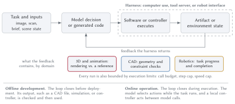
Here, real-to-sim denotes synthesizing a simulation environment from physical observations, such as video walkthroughs, multi-view photographs, point-cloud scans, or recorded robot demonstrations. Conversely, sim-to-real refers to transferring policies or behavioral trajectories developed in simulation onto physical robot hardware. The archived corpus instantiates both directions: from the KitchenTwin real-to-sim asset pipeline by Dou (Dou 2026b), the demonstration-driven reconstructions of Guo (Guo 2026a) and his dexterous retargeting onto simulated Wuji hands (Guo 2026b), to exported Graph-as-Policy controllers deployed by Goldberg (Goldberg 2026a).
Offline controller development can accommodate slow model calls; online action selection depends on the delay between observation and action (Goldberg 2026a; Isola 2026). The sim-to-real step can be tested under conditions withheld during simulation construction, while online operation also depends on the measured delay between model decisions and executed motion. Physical-safety requirements apply whenever generated code or model requests reach hardware (Section 7.4). Table 2 compares the model’s role, the retained output and the scope of the available checks across these regimes. Rendering, solid validation and a task score expose different errors; none can substitute for a test of the property required by the next stage of use.
| Workflow class | What the model does | Output | Feedback or check | What these checks do not support |
|---|---|---|---|---|
| Procedural scene generation | Writes and edits scene programs | Scenes, scripts, object structure | Rendering; comparison with reference images or scan points | Accurate physical parameters; reliable interaction |
| Native CAD construction | Calls modeling operations or generates a build program | Feature history, assemblies, solids | Geometry, constraint or edit checks | Manufacturing and functional validity |
| Online robot operation | Selects action requests from observations | Target poses or action calls | Camera images, robot state, task progress and completion | Dynamic control reliability; execution safety |
| Offline controller development | Writes, tests and revises control software or training code | A controller or a trained policy | Simulation and task scores | Transfer to physical conditions withheld during development |
Human involvement across workflows. Ricouard reports human review of plans and models, Nano builds a purpose-built rigging helper, and Dou (Dou 2026c) documents the reuse of motor-control, coordinate-conversion, and robot-kinematics code (Ricouard 2026a; @Dstudio_ai 2026). Separate human-time totals and complete intervention counts in these accounts are not reported. Displayed results can also leave total attempt counts undisclosed. Gathering these contributions lets a reader judge what “single prompt”, “autonomous” and “without task-specific training” mean in each report: one prompt can initiate internal iteration, autonomy can begin after human preparation, and a fixed frontier model can rely on specialist software or a separately trained policy. Offline policy development can itself include training, as in Zhu’s pen-spinning account (Zhu 2026a).
4 Capabilities
Across all four domains, models now produce outputs that can be edited or executed, though how these outputs are checked varies from a rendered image to a geometry-kernel test to observed task completion (Ricouard 2026a; Varghese 2026; Menon et al. 2026). GPT-6 Astra supplies most reports in the archive; the comparisons in Section 5 cover other frontier LLMs.
4.1 3D modeling
Models now build 3D scenes as editable programs, so users can revise individual objects and, in executable projects, animation and behavior. Krcha’s locomotive contains 3,295 editable objects reconstructed from a drawing, while the house accounts permit manual edits or import into another application (Krcha 2026c, 2026a; Ricouard 2026d). Most reported construction belongs to the offline development loop in Section 3.4. The gallery (Figure 2) shows 33 of the 187 cases in 3D modeling, grouped by category.
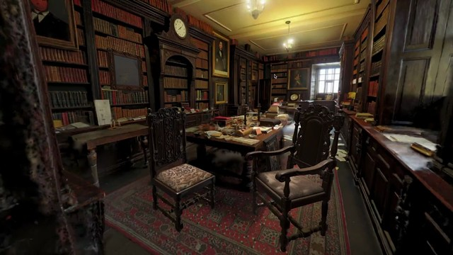
M171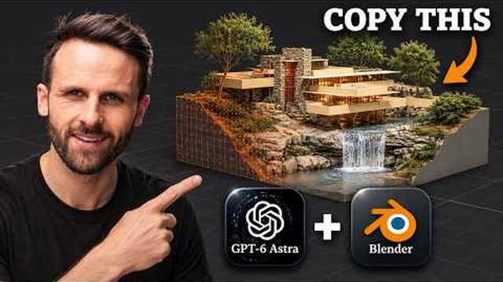
M42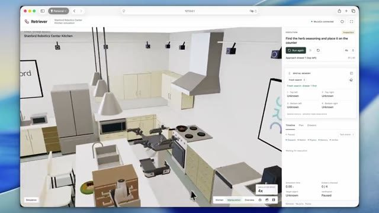
M48 M74
M74
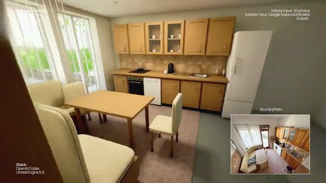
M104 M37
M37
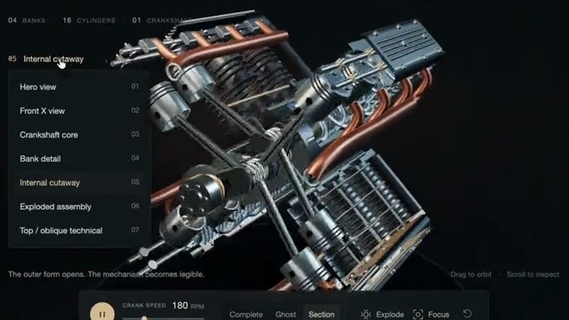
M106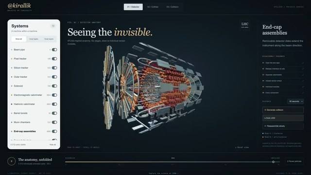
M107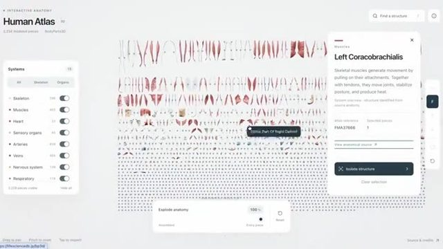
M71 M54
M54
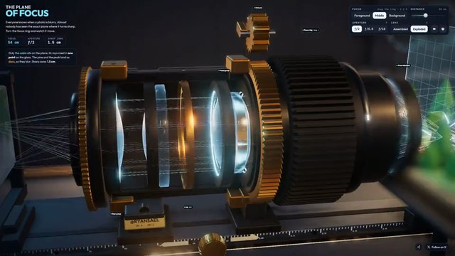
M105 M07
M07
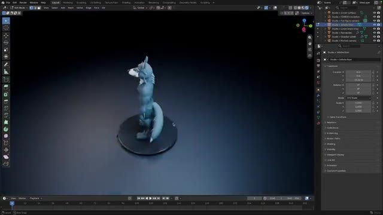
M16 M15
M15
 M60
M60
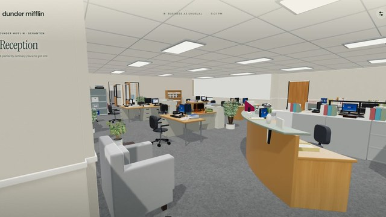
M108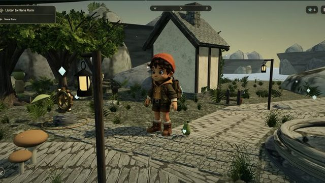
M04 M24
M24
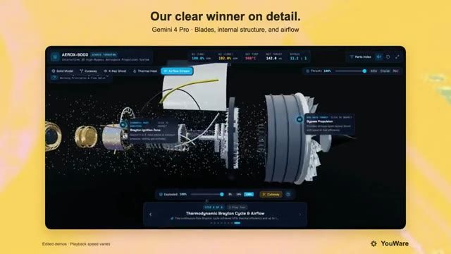
M82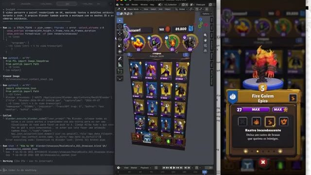
M23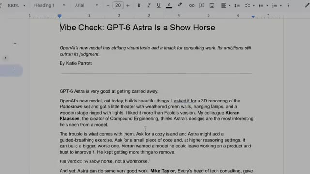
M02 M33
M33
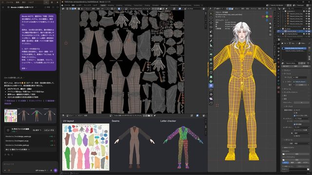
M39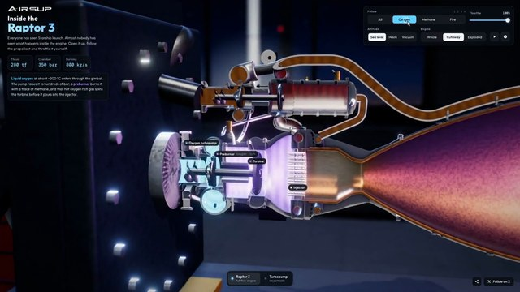
M113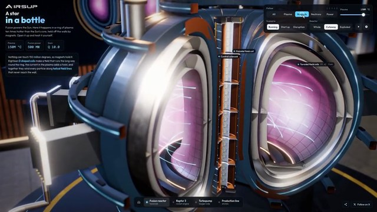
M114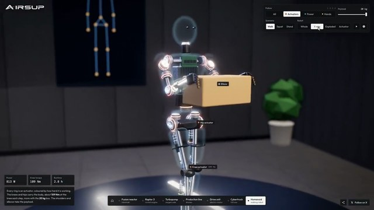
M115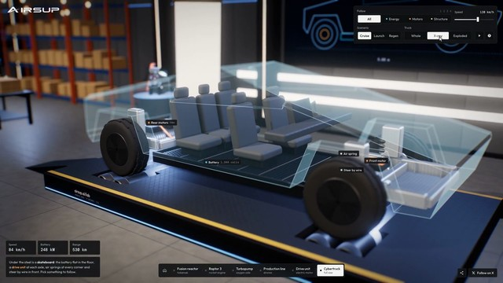
M147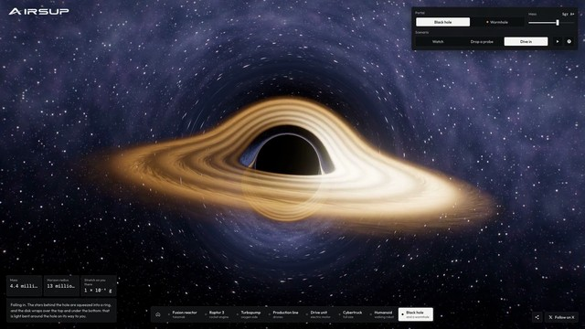
M148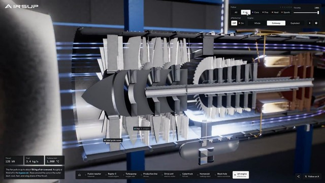
M149Reconstruction from photos, drawings and maps.
A reconstructed house supports manual geometry edits, and a generated house supports import into a game engine (Krcha 2026a; Ricouard 2026d). Users can adjust the house geometry by hand, and one Blender house was moved into a walkable Unreal Engine 5 (Epic Games 2026) scene with new props and lighting (Krcha 2026a; Ricouard 2026c, 2026d). Ricouard’s creator account, hosted by OpenAI Developers, retains human review of the plan and model and calls for professional review before construction (Ricouard 2026a). Reference fidelity remains a separate requirement: house-listing reconstruction still contains detail errors (Ye 2026).
A house-extension model built from an address comes with drawing sheets at scale 1:100, but the author acknowledges needed corrections and reports neither the drawing software, scale accuracy, nor planning acceptance (Lowrie 2026). A cabin reconstructed from reference images used DirectShape geometry instead of native Revit families, so despite its visual agreement it could not be edited as a building information model (BIM) (BIM Pure 2026a, 2026c).
Paired reconstructions share reference photographs, but lack a common fidelity test (Fateev 2026). In the workstation comparison, GPT-6 Astra and Claude Fable 5.1 each received four photographs and Blender MCP access. The comparison does not measure recovered dimensions, usable geometry, artistic quality, or production time.
Vehicles, products and environments.
Separate scene objects permit detail changes and integration into larger environments. Krcha reports producing the locomotive from a steam-train drawing in a few minutes, with further detail changes available by request (Krcha 2026c). De Maistre reports a tugboat built from a Scenario image in about 10 minutes, followed by a version with fewer than 10,000 faces in another 10 minutes (Maistre 2026). Object count and face reduction provide concrete targets for subsequent edits. They do not measure reference fidelity or preservation of design relations through edits.
Wolff’s company workflow uses four server-rack photos and one data-center photo to build a scene with 180 racks, imports FBX files into Unity, adds lighting and colliders with Environment Builder, and exports to SynergyXR (Wolff 2026). A later request lowers cable trays and reroutes cables, despite loose initial reference adherence. Wolff reports the team’s own expert review and says the model never operated the computer directly; the time and token cost appear in Section 7.2.
Characters and materials.
Character workflows focus on multi-view reference alignment and material assignment (@Dr_pepperien 2026). Because the modeler works from design sheets and weapon views, matching the reference across views is the main requirement, judged against artistic intent (Section 5.5) (@Dr_pepperien 2026). Character workflows often start from meshes made with specialist generators such as Meshy (Meshy AI 2026) or Tripo, which are then rigged and animated (Shalaby 2026; @Dstudio_ai 2026).
Game assets and playable worlds.
Executable worlds make runtime behavior available for testing (Gostev 2026; Mollick 2026c; Ricouard 2026b). The browser examples combine six Van Gogh paintings into a walkable Three.js (three.js authors 2026) town and extend a procedural ocean with underwater animals. Ricouard’s Void Explorer account pairs repeatable code and browser checks with human playtesting (Ricouard 2026b). Specialist assets also remain in these workflows: Shalaby uses Meshy (Meshy AI 2026) for Big Boy’s main character and learns Blender during the project, while reporting remaining interface, graphics and movement work (Shalaby 2026). A playable scene shows that the code runs, not that the game is complete.
Pipelines across tools.
Miomoto and Higgsfield workflows construct scenes before separate video refinement or rendering stages (Higgsfield AI 2026c; Shiker 2026). Shiker describes modeling and motion graphics in Miomoto before video-to-video refinement; the archive identifies the object as a phone (Shiker 2026). The implementation details needed to compare components are not reported. Higgsfield’s (Higgsfield AI 2026b) vendor account uses a 3D viewport to block a museum, cast and shot list, then Seedance 2.5 (ByteDance Seed 2026) to render each setup. No independent run of the Higgsfield workflow was available to this review. Exported TouchDesigner projects and procedural Houdini (SideFX 2026) scenes similarly supply bases for revision, with their authors reporting further adjustments or unresolved issues (@aigeboku 2026; Yokohara 2026), while Scarcella judges the Houdini project file that GPT-6 Astra produced “unworkable to a human” (Scarcella 2026).
Thomas describes architectural production across Blender, Rhino, Grasshopper, Revit and Unreal Engine in the companion video description, while cautioning that faster production does not imply better design; the productivity claim is unmeasured, and the full video was not reviewed (Thomas 2026).
Assets and environments for simulation.
The KitchenTwin real-to-sim pipeline (Dou 2026b) reconstructs an articulated kitchen from a single 20-second handheld video, without depth sensors, CAD models, or asset libraries, in about a day including human oversight. In this framework, ViPE (NVIDIA Spatial Intelligence Lab 2026) estimates camera poses and metric depth, while instance detection and tracking models segment interactive objects. Per-object procedural scripts authored with GPT-6 Astra in a lightweight Blender domain-specific language are rendered directly over original camera frames and aligned against metric point clouds; an automated verification loop enforces that geometric critiques be explicitly grounded in visual evidence (Dou 2026b). The articulated assets are exported in MuJoCo XML Format (MJCF) (Google DeepMind 2026b, 2026a) and Unified Robot Description Format (URDF) (Open Robotics 2023). Alignment against the original frames gives a visible error signal, but thin or reflective objects and room shells still need refinement, and friction and mass remain unchecked (Dou 2026b). Figure 3 shows the input camera frame and the reconstructed interactive viewer.
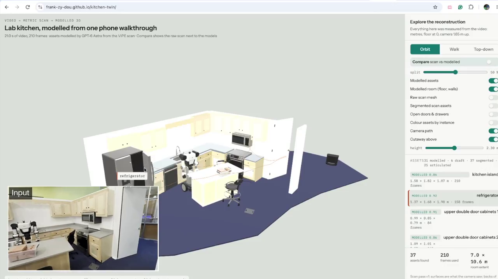
Guo reports real-to-sim from robot demonstrations: given multi-view RGB and recorded robot actions, the model calibrates cameras, builds object assets, performs physics system identification, runs MuJoCo and renders in Blender (Guo 2026a). Xu’s real-to-sim workflow produces a simulation-ready environment from renders of an office scan: a Blender rebuild aligned within 2 cm and exported in Universal Scene Description (USD) (Pixar Animation Studios 2026), with a G1 (Unitree Robotics 2026) humanoid walking through it in Newton (Newton Physics project 2026) simulation (Xu 2026).
Hu reports a real-to-sim pipeline that GPT-6 Astra wrote itself from a single human-hand video: hand tracking, IK retargeting to two simulated dexterous hands with 44 degrees of freedom, and grasp refinement (Hu 2026). None of these three accounts reports a controlled transfer test, and scan alignment and simulated retargeting check different properties than physical transfer does.
Conclusion.
3D modeling illustrates the first finding of this survey: models now build scenes as editable programs that serve as useful first drafts, from single objects to playable worlds and simulation environments (Sections 6.1 and 6.2). What these outputs lack is a check against the real reference. None of these accounts independently measures recovered dimensions or physical properties, and most workflows still rely on specialist tools and manual finishing (@Dstudio_ai 2026; Shalaby 2026; Dou 2026b).
4.2 Industrial design and CAD
CAD workflows produce parametric assemblies with feature histories and solid models validated by a geometry kernel. Both kinds of output can be edited, but neither has been shown to function or to be manufacturable. The examples include two SolidWorks assemblies and a turbofan of 511 kernel-checked solids (Senet 2026a, 2026b; Varghese 2026). The gallery (Figure 4) shows 14 of the 40 cases in industrial design and CAD, grouped by category.
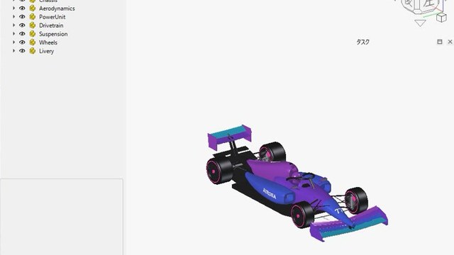
I26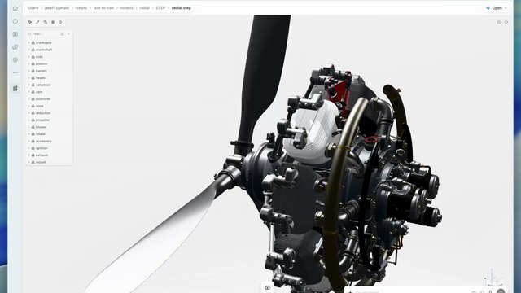
I32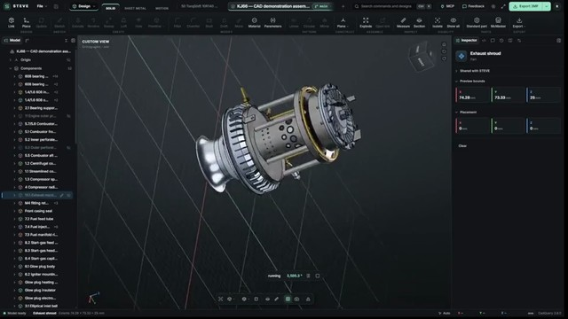
I36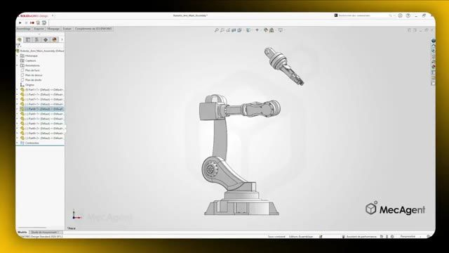
I02 I03
I03
 I04
I04
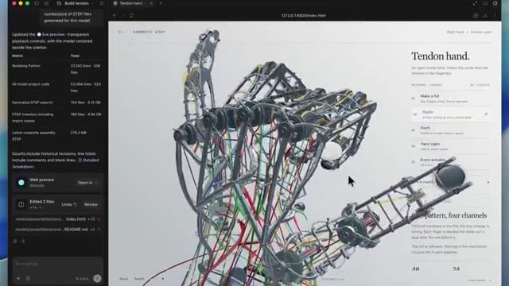
I08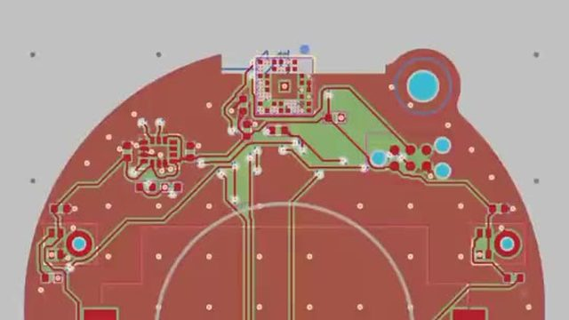
I13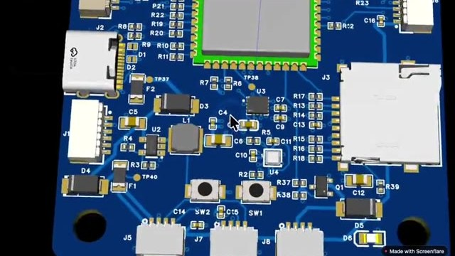
I20 I01
I01
 I06
I06
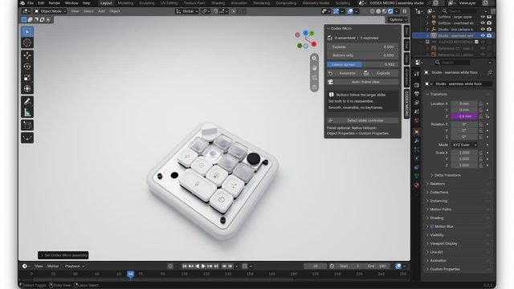
I07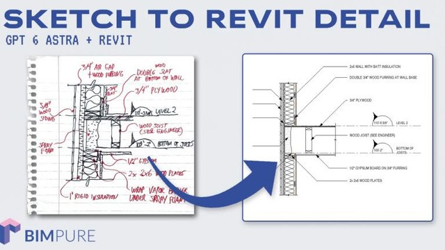
I17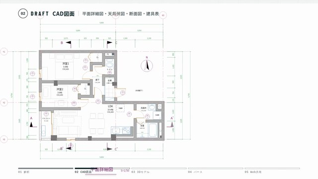
I30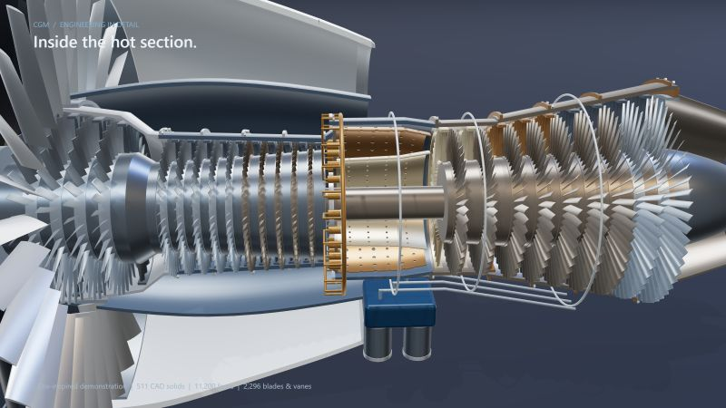
Parametric assemblies in commercial CAD.
The two MecAgent assemblies retain feature trees and intended-axis motion (Senet 2026a, 2026b). Senet and MecAgent’s vendor-reported SolidWorks 2026 robot arm contains 11 parts and 1 main assembly after a single-prompt run lasting 35 minutes; the turbojet contains 41 parts, 2 sub-assemblies and 1 main assembly after 57 minutes (MecAgent 2026a, 2026b). Both assemblies rotate as intended, but both retain unresolved constraints, mainly in their sketches, and the vendor describes both as far from manufacturable (Senet 2026a, 2026b). Both cases come from the vendor, and no independent test of the assemblies exists. Retained assemblies permit edit and constraint tests (Section 7.3).
A FreeCAD bulldozer built through Codex and FreeCAD MCP failed in mechanism simulation at its moving pivot, and a follow-up post still describes debugging; neither post names the model (@heecheee 2026b, 2026a).
Detail drafting with office standards.
Catellier converts a hand-drawn sketch into a Revit detail using existing components and office standards supplied through Notion, but reports framing and component errors requiring a correction prompt and human review before use in construction documents (Catellier 2026; BIM Pure 2026b).
Solid modeling through a kernel interface.
CGM checks whether generated bodies form valid solids. Varghese uses Gray’s Python wrapper around the CGM C++ interface as an MCP server, with GPT-6 Astra at medium effort, and identifies CGM as the kernel used by CATIA V5 (Varghese 2026). The reported turbofan contains 11,200 faces and 2,296 blades and vanes, produced in under 30 minutes as native XCGM and STEP files, images and a web viewer. All bodies reportedly pass CGM’s B-rep checker, and GPT-6 Astra also ran selected clearance checks. These checks confirm geometric validity, not that the engine would work.
Interactive product models.
Interactive product models support material changes, assembly views
and application behavior (Taussy 2026; Schirano
2026a). Taussy’s chair, modeled from one IKEA photo in minutes,
exposes dimensions, material switching, part inspection, exploded and
flat-pack views, and self-assembly; no comparison with physical
dimensions is reported. Schirano’s modeled iPod becomes a Mac app for
displaying Codex threads after 15 minutes, without manufacturing
validation. Fitzgerald implements a 24-degree-of-freedom, 48-actuator
antagonistic tendon-driven anthropomorphic robot hand as a source-only
CAD project within the open-source text-to-cad
framework (Fitzgerald
2026a, 2026b). The project includes Python build scripts
(rebuild.py) that generate valid multi-body STEP geometry,
along with mechanical design reviews and actuator interface
specifications. Kinematic and topological checks are automated, but
tendon tension and cable friction have not been tested on hardware.
Cornelissen develops a foldable bicycle concept from text, sketches and annotations, with folding and riding animations judged suitable as an initial client proposal; prototyping, mechanical engineering and manufacturing remain future work (Cornelissen 2026).
Conclusion.
CAD shows both the first finding and its limit most clearly. Models produce native assemblies and kernel-valid solids that engineers can open and edit (Senet 2026a, 2026b; Varghese 2026), but no account shows that a design functions or can be manufactured. Accepting a design requires tolerance and manufacturability checks that current workflows do not yet perform (Keating 2026) (Sections 6.1 and 7.3).
4.3 Robot control
Robot workflows divide into online target selection or policy correction and offline controller development (Chooi 2026b; Su et al. 2026; W. Zhang et al. 2026). Manipulation trials measure task completion, including 19/20 bowl placements for GPT-6 Astra in Robocurve’s physical trials, separately from intermediate progress (Menon et al. 2026; Z. J. Zhang et al. 2026; W. Zhang et al. 2026). The gallery (Figure 6) shows 30 of the 53 cases in robot control, grouped by category.
 R01
R01
 R04
R04
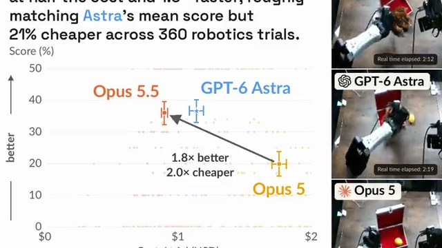
R37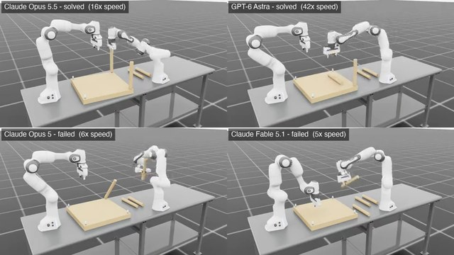
R34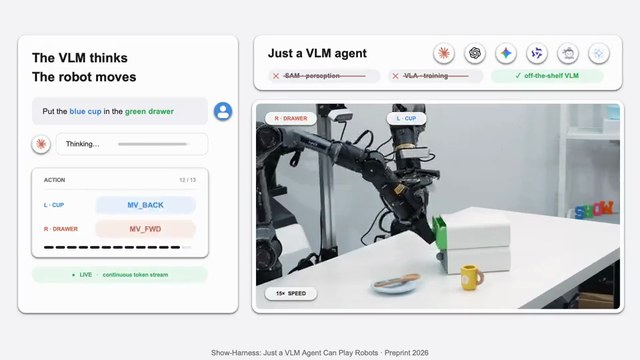
R45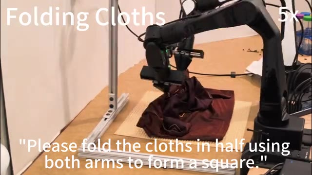
R49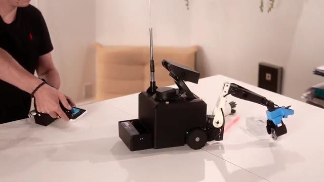
R22 R20
R20
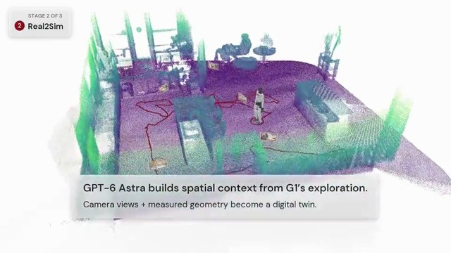
R40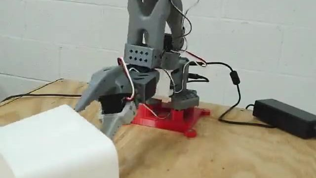
R08 R09
R09
 R10
R10
 R03
R03
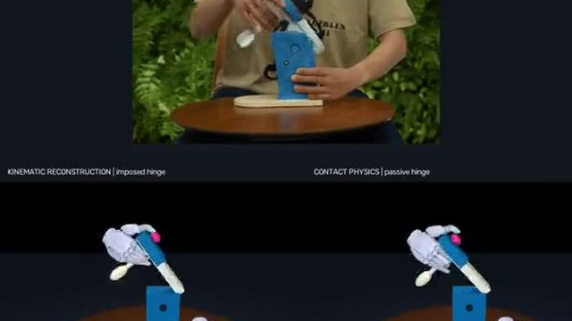
R18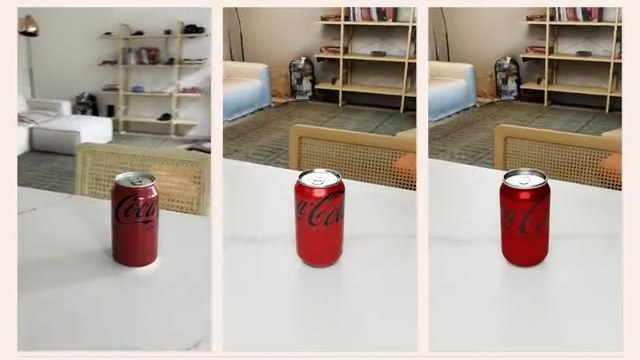
R33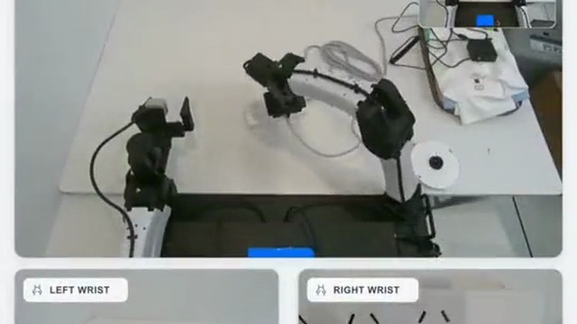
R46 R11
R11
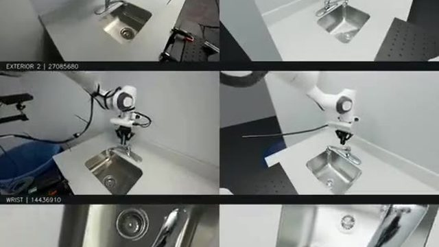
R15 R14
R14
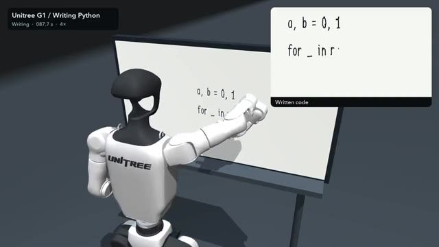
R16 R07
R07
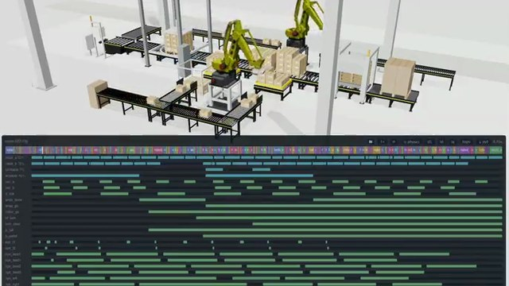
R42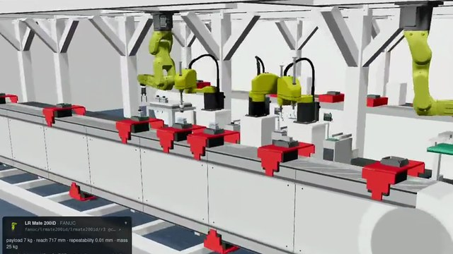
R43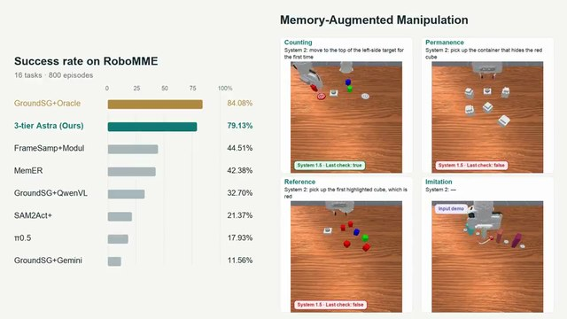
R47 R21
R21
 R06
R06
Manipulation through end-effector targets.
Target-based control succeeds on placement tasks but usually fails on precision insertion, which requires controlled contact. Under medium effort and a 20-call budget, Robocurve reports bowl completion of 19/20 for GPT-6 Astra against 8/20 for Claude Fable 5.1 on different rigs (Menon et al. 2026; Chooi 2026b). The bowl runs were non-interleaved, manually reset and operator-graded with model identity known. Inspect Robots converts targets into I2RT YAM (I2RT 2026) arm motion through IK. Links to transcripts, camera recordings, and trajectories were posted in the comments, so reviewers can check how requested targets led to motion. Puzzle insertion records 2/20 for both GPT-6 Astra and Claude Fable 5.1 on the same rig (Menon et al. 2026).
Other pickup accounts expose the target and timing conditions of successful motions (Nichol 2026a, 2026b; Dou 2026c). In one SO-101 (The Robot Studio 2026) sequence, dumping blocks before the next pickup moved them, and the last block ended up out of reach. The pen-pickup experiment reported by Dou (Dou 2026c) leverages xhigh reasoning effort, a static third-person RGB camera, and modular kinematics and coordinate-transform routines; a single successful pickup required approximately 22 minutes of elapsed execution. The author notes that quasi-static movement makes manipulation easier by removing most of the dynamics, at the expense of operational speed. Neither evaluation reports a completion distribution across varied spatial poses or execution velocities.
Bimanual tasks.
Bimanual trials often record intermediate progress without task completion. StationeryBench’s five desk tasks involve a marker, paper clips, a ruler, sticky notes and a lidded box (Z. J. Zhang et al. 2026; Chooi 2026c). Across 200 trials, mean progress on a 0–100 scale is 46 for GPT-6 Astra and 12 for MolmoAct2, but only 7 of 100 GPT-6 Astra trials and none of 100 MolmoAct2 trials finish. MolmoAct2 runs zero-shot without task/object fine-tuning, with instructions longer than its training commands; its step cap is 1,200 against GPT-6 Astra’s 900. Operator grading, manual resets and varying rigs further condition this comparison.
Learning from demonstrations.
Supplied demonstrations give the model task context in ENPIRE, GPT-Policy and RoboDojo (Xiao 2026a; Cheng et al. 2026; W. Zhang et al. 2026). ENPIRE assigns motion planning and inverse kinematics to the harness while the model supplies end-effector targets (Zhang 2026b, 2026a). Xiao reports a successful first pass after a human recording (Xiao 2026a). No condition without a demonstration is reported. Section 5.3 gives the measured outcomes for GPT-Policy and RoboDojo.
From simulation to robot execution.
Sucar’s real-to-sim pipeline reconstructs and tracks tabletop objects and hand pose, then loads the scene into MuJoCo for a simulated robot to copy the human action (Sucar 2026). The account supplies no controlled physical-transfer protocol.
Guo’s second report describes real-to-sim from two videos without states or actions (Guo 2026b). After real-to-sim, physical retargeting to Wuji hands (Wuji Technology 2026) is carried out in simulation, with successful simulated rollouts reported (Guo 2026b). A success rate and controlled transfer protocol are not reported.
Goldberg’s Robot Sim Studio account uses real-to-sim to infer physical parameters from a short sponge-wiping video, reporting construction of a Newton simulation in under an hour (Goldberg 2026a). Running the generated GaP (K. Chen et al. 2026) controller on the real robot is the sim-to-real step. Goldberg reports successful execution and a sim-to-real failure: one trial pushes over the metal bar, whose mass “could not be reliably inferred from the visual evidence” (Goldberg 2026a). These development loops tolerate slow calls. Across the retained archive, no case reports controlled transfer to physical conditions withheld during simulation construction. Under the four-state rule in Section 10, the loop is therefore only partly complete: only Goldberg’s account reports physical execution, and it also records a physical failure.
Drones, humanoids and dexterous hands.
On Drone-Bench, normalized scores for four recent models range from 76% for GPT-5.6 Sol through 87% for Claude Opus 5 and 91% for Claude Fable 5.1 to 95% for GPT-6 Astra, over 10 runs per model (Andon Labs 2026c). The results exclude runs disqualified in the source’s cheating review and keep the best of 10 submissions, scored against demo code written by a human with a coding agent. RoboPianist instead measures note-onset F1, the harmonic mean of precision and recall: the two-hand Twinkle controller developed with GPT-6 Astra reaches 0.902 after practice, in one verification episode, against 0.886 from rescored published reinforcement-learning (RL) reference actions (W. Zhang et al. 2026).
In one HumanCLAW-Bench (Li et al. 2026) run in Habitat (Meta AI 2026), a simulated humanoid navigated to a target and sat on it (Gu 2026).
The pen-spinning and robot-dog workflows use model calls during policy development, before execution (Zhu 2026a; Sasaki 2026). Zhu’s pen-spinning request, in simulation, specifies Isaac Lab (NVIDIA 2026a), a Sharpa hand (Sharpa 2026) and a generated pen mesh, with 1.5 days of autonomous work including training (Zhu 2026a). This approach follows Eureka, which used language models to design rewards for RL (Ma, Liang, G. Wang, et al. 2024). The pen-spinning account supplies no success metric.
Sasaki combines Fusion 360 (Autodesk 2026) design with simulated training, reporting nine motions after 25 loops over five days and leaving physical implementation planned (translated) (Sasaki 2026).
In physical self-righting trials with the Wuji2 hand (Dou 2026d), an 8-minute attempt at Max Effort failed and a 3-minute attempt under Ultra settings succeeded, leaving the hand upright with its actuators off; the model’s rationale cited pose tests in simulation and combined visual and joint telemetry.
Scope of additional demonstrations.
Vitrus provides hardware and operating-system access for physical control (Cassiano 2026; Vitrus 2026); the MolmoSpaces-v1 (Rayyan 2026) subset report identifies a simulated comparison with action baselines. Neither account supplies a protocol sufficient to establish generalization. Appendix C retains further task reports and unspecified settings.
Conclusion.
Robot control reflects the second finding. Models are most useful offline, writing simulations and controllers that then run without them, while online control succeeds on coarse placement but rarely on precise contact. Because intermediate progress often exceeds completion, robot results can be interpreted only when requested targets, progress, and completed tasks are reported separately (Menon et al. 2026; Z. J. Zhang et al. 2026).
4.4 Animation and dynamic motion
Where 3D modeling produces static geometry, animation adds motion over time: rigged characters, procedural motion graphics, shaders, and animated layouts that guide video generation. It is the least evaluated of the four domains, with no standard benchmark in the record. The gallery (Figure 8) shows 24 of the 43 cases in animation, grouped by category.
 M21
M21
 M20
M20
 M52
M52
 M28
M28
 A01
A01
 M30
M30
 M45
M45
 M83
M83
Rigging and character articulation.
Character workflows construct bone hierarchies, assign skinning weights, and author secondary kinematics (@Dstudio_ai 2026; The Bugged Dev 2026a). One rigging workflow pairs Tripo-generated mesh components with a custom rigging helper in Blender, adding cloth and hair dynamics within half a day, and its author notes that domain knowledge is still needed to identify problems and solve them with helper apps (@Dstudio_ai 2026). The Bugged Dev reports single-shot auto-rigging and locomotion animations (walking, running, combat stances) that consumed three usage sessions, observing that the result remains partly broken (The Bugged Dev 2026a). Advanced articulation accounts document poseable character rigs with interactive controls (Higgsfield AI 2026a) and fine-grained joint-by-joint deformation, such as text-directed finger motions and coin manipulation across virtual knuckles (Deng 2026).
Procedural animation and motion graphics.
Beyond skeletal rigs, models synthesize procedural motion graphics
and particle dynamics directly through code. In TouchDesigner, the model
operated the interface directly under the Ultra setting to recreate
multi-layer particle animations and exported
.toe/.tox project files (@aigeboku 2026). In procedural graphics,
Yokohara documents procedural architectural generation in Houdini, with
lighting and the video also left to the model, observing that the
results require repeated natural-language refinement cycles (Yokohara
2026). Shiker pairs Miomoto’s Motion AI with GPT-6 Astra to
generate timeline-based motion graphics, 3D models and scenes from text
briefs (Shiker
2026).
Interactive and shader animation.
Shader-based animation runs in real time. One example prompts GPT-6 Astra to extend open-source WebGL water shaders into an interactive underwater world with procedural creature flocking and autonomous camera navigation, alongside a neo-gothic city raymarching shader authored for twigl.app (Mollick 2026c, 2026b). In web-native environments, Three.js pipelines synthesize animated industrial assembly sequences and vehicle dynamics, enabling runtime user interaction without offline rendering overhead.
Previsualization and animation-to-video workflows.
A common pattern uses a rough 3D animation to guide video generation. Rather than relying on pure 2D generative video, practitioners prompt frontier models in Blender or a 3D viewport to construct coarse 3D geometry, solve camera motion paths, and animate proxy figures (Higgsfield AI 2026c; FLORA 2026b; Lew 2026; Ameen 2026; PixVerse 2026). In Higgsfield’s previs workflow, GPT-6 Astra maps museum scene geometry and camera blocking in the 3D viewport, which Seedance 2.5 uses as spatial guidance for video rendering (Higgsfield AI 2026c). Similarly, FLORA uses Blender shoe-last animations to lock the motion of generated sneaker video (FLORA 2026b), Lew keyframes camera trajectories via Blender MCP as a reference for AI video generation with MiniMax H3 and Magnific (Lew 2026), Ameen directs camera framing and keypress timing in Codex for product film animatics (Ameen 2026), and PixVerse utilizes stylized martial-arts motion references to constrain generative character video (PixVerse 2026). The authors report that these 3D layouts help keep generated video consistent, though none measures the improvement.
Conclusion.
Animation follows the same pattern as 3D modeling: models direct motion and write scripts, while external software handles time-stepping, inverse kinematics, and rendering. It is also the least evaluated domain, with no standard benchmark, so its capabilities rest almost entirely on demonstrations.
5 Evaluation
Tables 3 and 4 compare reconstruction, CAD, robot-control, and real-to-sim evaluations, giving each system’s scores, evaluation sample and source and protocol qualifications. The archive contains 524 posts covering 323 cases across 3D modeling, industrial design and CAD, robot control, and animation and dynamic motion.
5.1 3D, CAD and spatial benchmarks
Reconstruction benchmarks score visible information and geometry; native CAD benchmarks also test editability, while spatial-understanding benchmarks score answers about scenes (Tang et al. 2026; Shen et al. 2026; Andon Labs 2026a; Saini et al. 2026; Parametric CAD Bench 2026; OpenAI 2026d; DeepCybo Team et al. 2026). BenchCAD, for example, reports 95.9% mean voxel intersection over union (IoU) for GPT-6 Astra as a vendor-reported geometric-overlap result. Table 3 collects the systems and scores.
Video reconstruction measures retention of visible information under a shared software loop. BVB, Benchmarking Agentic Video Understanding via Programmatic Reconstruction in Blender, uses 288 videos and 5,130 spatiotemporal questions, with Mini-BVB, a shared sandbox and a per-scene cost ceiling (Tang et al. 2026). Among the selected frontier configurations, Overall ranges from Gemini 3.8 Flash high’s 62.08 to GPT-6 Astra high’s 70.07; GPT-5.6 Sol xhigh scores 67.49, Grok 4.6 xhigh 67.17, Qwen3.8-Max high 66.24, Claude Opus 5 high 66.21 and Gemini 3.1 Pro high 62.23. The leader’s Dual visual question answering (VQA) and Latent Similarity averages are 53.7 and 88.6, against 51.7 and 85.4 for GPT-5.6 Sol xhigh; the room-size Dual VQA score favors Sol at 53.1 against 33.1 (Tang et al. 2026). Dual VQA measures the share of source-correct answers retained on the reconstruction, so its denominator excludes source-incorrect questions. Overall combines semantic retention and latent similarity on a 0–100 scale. It is not a success rate, and the selected frontier configurations use different reasoning settings.
Aggregate reconstruction scores hide spatial properties.
Aggregate reconstruction scores can conceal substantial differences in the recovery of specific spatial properties: GPT-6 Astra’s Overall lead coexists with a room-size deficit. This result does not support a general claim of superior spatial understanding. The retained comparison does not separate perception from program generation and revision; property-specific tests would be needed to determine which stage accounts for the difference. Neither score independently verifies metric geometry, contact or physical parameters.
4DCodeBench moves video reconstruction from static scenes to dynamics: from a reference video and a fixed prompt alone, an agent writes an executable graphics program that rebuilds the scene’s geometry, motion and appearance, across 100 real and 100 synthetic scenes with rigid bodies, deformables, cloth, grains, fluids and fracture (Shen et al. 2026). Its Overall score averages five metric families on 0–1 scales. GPT-6 Astra at max effort leads the 18 configurations at 0.79, followed by Claude Opus 5.5 high at 0.78, GPT-6 Astra high at 0.77, Claude Fable 5.1 high at 0.74 and GPT-6 Astra low at 0.73; the strongest open-weight model, DeepSeek v4.1 Flash, scores 0.60 (4DCodeBench 2026). Every model reconstructs appearance and static geometry better than motion: GPT-6 Astra max scores 0.91 on the static families and 0.67 on the dynamic ones, and raising its effort from low to max lifts 3D Dynamics from 0.63 to 0.73. The executable solutions also show how motion was modeled: Opus 5.5 high writes a custom simulation in 61% of its solutions, while GPT-6 Astra low describes motion analytically in 85%. Each configuration runs once per scene, in its vendor’s coding agent or, for open-weight models, the Stirrup harness; failed runs receive the worst score on the affected metrics, and the human preference study omits Opus 5.5.
Floor-plan reconstruction supplies a connectivity endpoint. Blueprint-Bench 2 infers apartment connectivity from photographs with a persistent notepad across 50 apartments; its normalized graph score maps a random baseline to 0 and perfection to 1 (Andon Labs 2026a). Among the selected entries on the leaderboard as read on 2026-09-28, model scores range from GPT-5.6 Sol’s 0.336 to Claude Opus 5.5’s 0.512, with GPT-6 Astra ranking third at 0.497 (behind the human reference and Opus 5.5), followed by Claude Fable 5.1 at 0.419, Fable 5 and Gemini 3.8 Flash at 0.386, GPT-6 Sol at 0.369 and GPT-5.5 at 0.362. The human reference is 0.586 on a 12-apartment subset. Thus the human and model scores cover different samples; connectivity also leaves dimensional agreement untested.
Native CAD instruments add geometry and editability checks. CAD Arena’s primary leaderboard, last updated on 2026-09-25, reports geometry/editability means from 0.124 for Inkling with OpenCode to 0.750 for Claude Opus 5.5 with Claude Code (Anthropic 2026); GPT-6 Astra with Codex (OpenAI 2026a) follows at 0.671 and Claude Fable 5.1 with Claude Code at 0.662, with coding agents differing by row (Saini et al. 2026). The twelve-model board covers 18 parts on 5 platforms, with 995 of 1,080 trials scored; four systems score 90/90 trials, and the other eight score between 65/90 and 88/90. Table 3 lists every model and score; its protocol appendix carries the agents and provider costs per scored trial. The board contains no earlier-generation OpenAI entry. Its 95% intervals are bootstrapped over parts, but numeric endpoints are absent from the retained text; the report body was not retrieved. The primary board supplies the values previously circulated secondhand (Adam 2026; Saini et al. 2026). Geometry and editability scores supply no independent validation of a manufactured assembly.
Parametric CAD Bench v2 spans 64.04% for GLM-5.3 to 84.81% for Claude Fable 5.1 across ten systems on the same 100 FreeCAD (FreeCAD project 2026) tasks (Parametric CAD Bench 2026; gNucleus AI 2026). The two leaders are Fable 5.1 max with Claude Code at 84.81% ± 4.13 percentage points and GPT-6 Astra max with Codex at 84.78% ± 4.17; their 95% intervals overlap. Their perfect-task counts are 46/100 and 45/100, separate from mean continuous reward. Intermediate results receive graded credit and failed or unscored trials receive zero.
Ranking depends on what counts as success.
Fable 5.1 max leads mean reward at 84.81% with 46/100 perfect tasks, while GLM-5.3 max ranks last on mean reward at 64.04% yet has the highest perfect-task count, 51/100; the benchmark’s text notes that it reaches this count despite one failed trial (Parametric CAD Bench 2026). A continuous-reward ranking and a count of tasks fully satisfied need not agree, so the CAD comparison depends on which endpoint the reader treats as success. The retained table does not explain the cause of this reversal. Explaining it would require examining the task distribution, per-task rewards and the rule used to count perfect tasks. Agent and effort settings also differ by model: Fable 5.1, Grok 4.6 and Opus 5 have intervals overlapping GPT-6 Astra’s, which does not constitute a model-equivalence test. Changes to runtime, verifier isolation and failure handling mean v2 does not continue the v1 score series (Parametric CAD Bench 2026). These native-task rewards leave constraint, function and manufacturing acceptance to separate tests.
BenchCAD measures multi-view reconstruction to executable CAD code with tools (OpenAI 2026d; Sher 2026; BenchCAD 2026). Alongside GPT-6 Astra’s overlap score, the vendor-reported table gives 83.3% for GPT-5.6 Sol and relays 84.3%, 82.1% and 67.5% for Claude Fable 5.1, Opus 5 and Fable 5, whose results incorporate three evaluation modifications according to the launch footnote (OpenAI 2026d). The launch sample is unspecified, and the split, attempt budget and tool configurations are not established as matched across models. VoxelMatters and the leaderboard repeat the vendor figure; the leaderboard labels it secondhand, and neither retained version supplies an independent run (Sher 2026; BenchCAD 2026). Overlap does not test whether a parameter change preserves required behavior.
Sunnyday Technologies’ HandBench pilot separates supplied component occurrences from placements matching a reference pose in one robotic-hand assembly, retaining unsuccessful attempts under “Supplied / 226” and “Matched / 226”; differing execution conditions preclude a model ranking, and the CAD returns and evaluator code are not openly deposited (Sunnyday Technologies 2026). Interpret AI’s recent Factory Bench snapshot grades geometry, editability and manufacturability across task families and model–tool combinations, reporting completed-rollout means with sample standard deviations rather than success rates; its limited public protocol and distinct scoring rule preclude comparison on BenchCAD’s voxel-IoU scale (Interpret AI 2026).
CadQueryEval benchmarks programmatic CAD generation across 25 natural-language tasks executed in CadQuery within containerized Docker environments (Wahl 2026). Generated STL geometry undergoes automated binary validation against ground-truth solids across watertightness, manifoldness, component count, and bounding box, volume ( ≤ 2.0%), Chamfer distance ( ≤ 1.0 mm), and 95th-percentile Hausdorff distance ( ≤ 1.0 mm) tolerances. Across 91 evaluated foundation models, top frontier configurations achieve near-perfect or perfect passes across all 25 tasks: GPT-6 Astra (1.00 accuracy, $0.47 per 25-task run), Claude Opus 5.5 (1.00, $0.32), GPT-5.6 Sol Pro (1.00, $1.04), and GPT-6 Sol (1.00, $0.11), followed closely by Gemini 3.8 Flash (0.96, $0.49). However, because pass criteria rely on binary geometric bounds across a modest 25-task corpus, scores measure syntax and macroscopic envelope fidelity rather than complex parametric feature histories or downstream manufacturing tolerances.
PhysBrain 1.5 extends the comparison to embodied understanding, with vendor-reported averages of 73.3 for GPT-6 Astra at low thinking, 73.0 for Gemini 3.6 Flash, 67.9 for Claude Opus 5 and 72.5 for PhysBrain 1.5 (8B) across 28 benchmarks (DeepCybo Team et al. 2026). The protocol standardizes comparison inputs and uses each benchmark’s canonical metric. The Visual-Spatial Intelligence Benchmark (VSI-Bench), MindCube and the 3D Spatial Reasoning Benchmark (3DSRBench) probe video or image spatial reasoning (J. Yang et al. 2025; Q. Wang et al. 2026; Ma et al. 2025). The account identifies the benchmark labeled ERQA with the Gemini Robotics report (Gemini Robotics Team et al. 2025; DeepCybo Team et al. 2026). The retained abstract does not define or expand ERQA. No independent PhysBrain reproduction was found in the retained record, and understanding scores do not substitute for execution tests.
| System | Metric | Sample | Result | Main comparison limit |
|---|---|---|---|---|
| BVB: video reconstruction; 288 videos, 5,130 questions (Tang et al. 2026) | ||||
| GPT-6 Astra | Overall; DV; LS | 288 videos | Overall 70.07; DV 53.7; LS 88.6; room-size DV 33.1 | Reasoning settings differ |
| GPT-5.6 Sol | Overall; DV; LS | 288 videos | Overall 67.49; DV 51.7; LS 85.4; room-size DV 53.1 | Reasoning settings differ |
| Grok 4.6 | Overall; DV; LS | 288 videos | Overall 67.17; DV 52.1; LS 84.2 | Reasoning settings differ |
| Qwen3.8-Max | Overall; DV; LS | 288 videos | Overall 66.24; DV 52.7; LS 81.3 | Reasoning settings differ |
| Claude Opus 5 | Overall; DV; LS | 288 videos | Overall 66.21; DV 52.6; LS 81.4 | Reasoning settings differ |
| Gemini 3.1 Pro | Overall; DV; LS | 288 videos | Overall 62.23; DV 51.1; LS 74.5 | Reasoning settings differ |
| Gemini 3.8 Flash | Overall; DV; LS | 288 videos | Overall 62.08; DV 48.4; LS 77.4 | Reasoning settings differ |
| 4DCodeBench: dynamic scenes from video to code; 200 scenes (Shen et al. 2026; 4DCodeBench 2026) | ||||
| GPT-6 Astra max | Overall; VQA | 200 scenes | 0.79; 87.6% (rank 1 of 18) | Codex agent |
| Claude Opus 5.5 high | Overall; VQA | 200 scenes | 0.78; 82.8% | Claude Code; not in human study |
| GPT-6 Astra high | Overall; VQA | 200 scenes | 0.77; 85.0% | Codex agent |
| Claude Fable 5.1 high | Overall; VQA | 200 scenes | 0.74; 78.8% | Claude Code agent |
| GPT-6 Astra low | Overall; VQA | 200 scenes | 0.73; 78.2% | Codex agent |
| Claude Opus 5 high | Overall; VQA | 200 scenes | 0.72; 76.4% | Claude Code agent |
| GPT-5.6 Luna max | Overall; VQA | 200 scenes | 0.67; 67.3% | Codex agent |
| GPT-5.6 Sol high | Overall; VQA | 200 scenes | 0.65; 67.4% | Codex agent |
| Gemini 3.8 Flash high | Overall; VQA | 200 scenes | 0.64; 62.7% | Antigravity agent |
| DeepSeek v4.1 Flash high | Overall; VQA | 200 scenes | 0.60; 50.0% | Stirrup; 199/200 rendered |
| Qwen3.8 Flash-Next xhigh | Overall; VQA | 200 scenes | 0.56; 58.0% | Stirrup; 181/200 rendered |
| GPT-5.6 Terra high | Overall; VQA | 200 scenes | 0.55; 48.4% | Codex agent |
| GLM 5.3 Flash max | Overall; VQA | 200 scenes | 0.47; 29.5% | Stirrup; 196/200 rendered |
| Muse Glimmer high | Overall; VQA | 200 scenes | 0.44; 11.0% | Stirrup; 199/200 rendered |
| MiMo v2.5 | Overall; VQA | 200 scenes | 0.43; 24.6% | Stirrup; 196/200 rendered |
| MiniMax M3 | Overall; VQA | 200 scenes | 0.34; 17.9% | Stirrup; 160/200 rendered |
| Mistral Medium 3.5 | Overall; VQA | 200 scenes | 0.32; 1.3% | Stirrup; 183/200 rendered |
| Gemma-4 31B | Overall; VQA | 200 scenes | 0.19; 5.6% | Stirrup harness |
| Blueprint-Bench 2: floor-plan connectivity; 50 apartments (Andon Labs 2026a) | ||||
| GPT-6 Astra | Normalized graph score | 50 apartments | 0.497 (rank 3) | Human sample differs |
| Claude Opus 5.5 | Normalized graph score | 50 apartments | 0.512 | Human sample differs |
| Claude Fable 5.1 | Normalized graph score | 50 apartments | 0.419 | Human sample differs |
| Claude Fable 5 | Normalized graph score | 50 apartments | 0.386 | Human sample differs |
| Gemini 3.8 Flash | Normalized graph score | 50 apartments | 0.386 | Human sample differs |
| GPT-6 Sol | Normalized graph score | 50 apartments | 0.369 | Human sample differs |
| GPT-5.5 | Normalized graph score | 50 apartments | 0.362 | Human sample differs |
| GPT-5.6 Sol | Normalized graph score | 50 apartments | 0.336 | Human sample differs |
| Human (reference) | Normalized graph score | n = 12 apartment subset | 0.586 | Subset only |
| CAD Arena: geometry/editability; 18 parts, 5 platforms (Saini et al. 2026) | ||||
| GPT-6 Astra | Mean score | 90/90 scored | 0.671 (rank 2) | Agents differ by row |
| Claude Opus 5.5 | Mean score | 88/90 scored | 0.750 | Agents differ by row |
| Claude Fable 5.1 | Mean score | 90/90 scored | 0.662 | Agents differ by row |
| GPT-6 Sol | Mean score | 85/90 scored | 0.525 | Agents differ by row |
| Gemini 3.8 Flash | Mean score | 90/90 scored | 0.410 | Agents differ by row |
| Grok 4.6 | Mean score | 90/90 scored | 0.348 | Agents differ by row |
| Muse 1.3 | Mean score | 87/90 scored | 0.318 | Agents differ by row |
| GPT-6 Luna | Mean score | 83/90 scored | 0.301 | Agents differ by row |
| Grok 4.7 | Mean score | 84/90 scored | 0.258 | Agents differ by row |
| DeepSeek V4 | Mean score | 76/90 scored | 0.187 | Agents differ by row |
| Inkling Small | Mean score | 65/90 scored | 0.143 | Agents differ by row |
| Inkling | Mean score | 67/90 scored | 0.124 | Agents differ by row |
| Parametric CAD Bench v2: native CAD; 100 FreeCAD tasks/system (Parametric CAD Bench 2026; gNucleus AI 2026) | ||||
| Claude Fable 5.1 | Mean reward; perfect tasks | 100 tasks | 84.81% ± 4.13; 46/100 perfect | Leader CIs overlap |
| GPT-6 Astra | Mean reward; perfect tasks | 100 tasks | 84.78% ± 4.17; 45/100 perfect | Leader CIs overlap |
| Grok 4.6 | Mean reward; perfect tasks | 100 tasks | 82.21% ± 4.77; 47/100 perfect | Agent/effort settings differ |
| Claude Opus 5 | Mean reward; perfect tasks | 100 tasks | 79.52% ± 5.69; 49/100 perfect | Agent/effort settings differ |
| Kimi K3 | Mean reward; perfect tasks | 100 tasks | 76.18% ± 6.39; 46/100 perfect | Agent/effort settings differ |
| Claude Sonnet 5 | Mean reward; perfect tasks | 100 tasks | 70.52% ± 7.58; 49/100 perfect | Agent/effort settings differ |
| GPT-5.6 Sol | Mean reward; perfect tasks | 100 tasks | 70.34% ± 7.01; 43/100 perfect | Agent/effort settings differ |
| GPT-5.6 Terra | Mean reward; perfect tasks | 100 tasks | 68.66% ± 7.19; 47/100 perfect | Agent/effort settings differ |
| Muse Spark 1.3 | Mean reward; perfect tasks | 100 tasks | 65.46% ± 8.03; 47/100 perfect | Agent/effort settings differ |
| GLM-5.3 | Mean reward; perfect tasks | 100 tasks | 64.04% ± 8.61; 51/100 perfect | Agent/effort settings differ |
| BenchCAD: multi-view renders to CAD code; launch sample unspecified (OpenAI 2026d; Sher 2026; BenchCAD 2026) | ||||
| GPT-6 Astra | Mean voxel IoU | Unspecified | 95.9% | Protocols not established as matched |
| GPT-5.6 Sol | Mean voxel IoU | Unspecified | 83.3% | Protocols not established as matched |
| Claude Fable 5.1 | Mean voxel IoU | Unspecified | 84.3% | Protocols not established as matched |
| Claude Opus 5 | Mean voxel IoU | Unspecified | 82.1% | Protocols not established as matched |
| Claude Fable 5 | Mean voxel IoU | Unspecified | 67.5% | Protocols not established as matched |
| HandBench: static hand assembly; pilot reported recently (Sunnyday Technologies 2026) | ||||
| GPT-6 Astra settings; Grok Bot attempts | Supplied / 226; Matched / 226 | 1 assembly; 6 attempts, 5 graded | Supplied/matched counts: GPT-6 Astra Medium 98/12, Extra high 226/20; Low unavailable/ungraded; Grok 01: 1/1, 02: 226/1, 03: 139/1 | Unranked; execution differs; missing parts remain in denominator; anchor included |
| Factory Bench: geometry, editability and manufacturability; recent snapshot (Interpret AI 2026) | ||||
| GPT-6 Astra; Codex, max | Mean score ± sample SD | 4 task families; rollout counts unspecified | A: 40% ± 15%; B: 74% ± 8%; C: 39% ± 2%; D: 52% ± 5% | Completed rollouts only; limited protocol; scores are not success rates or voxel IoU |
| SD denotes sample standard deviation, not a confidence interval; Factory Bench’s percentages are graded scores. | ||||
| CadQueryEval: programmatic CAD; 25 tasks, 91 models (Wahl 2026) | ||||
| GPT-6 Astra | Accuracy; Stderr; Cost | 25 tasks | 1.00; 0.000; $0.47 | Binary geometric checks only |
| Claude Opus 5.5 | Accuracy; Stderr; Cost | 25 tasks | 1.00; 0.000; $0.32 | Binary geometric checks only |
| GPT-6 Sol | Accuracy; Stderr; Cost | 25 tasks | 1.00; 0.000; $0.11 | Binary geometric checks only |
| Gemini 3.8 Flash | Accuracy; Stderr; Cost | 25 tasks | 0.96; 0.040; $0.49 | Binary geometric checks only |
| PhysBrain 1.5: embodied understanding; 28 benchmarks (DeepCybo Team et al. 2026) | ||||
| GPT-6 Astra | Average; benchmark scores | Benchmark-specific | Average 73.3; VSI-Bench 59.8; MindCube 78.8; 3DSRBench 62.3; ERQA 75.8 | Understanding only |
| Gemini 3.6 Flash | Average | Benchmark-specific | 73.0 | Understanding only |
| Claude Opus 5 | Average | Benchmark-specific | 67.9 | Understanding only |
| PhysBrain 1.5 (8B; specialist reference) | Average | Benchmark-specific | 72.5 | Understanding only |
| Metric notes. IoU: intersection over union (0–100%). CI: 95% confidence interval; reward half-widths are percentage points (pp). BVB: Benchmarking Agentic Video Understanding via Programmatic Reconstruction in Blender. DV: Dual visual question answering, conditional on source-correct questions; LS: Latent Similarity. DV, LS and Overall use 0–100 scales; Overall is not a success rate. CAD Arena and Blueprint scores use 0–1 scales. 4DCodeBench Overall averages five 0–1 family scores (Perceptual, 2D Dynamics, 2.5D Geometry, 3D Geometry and 3D Dynamics); its VQA is the mean per-scene accuracy of a vision-language judge. PhysBrain scores use benchmark-specific 0–100 scales; 8B denotes eight billion model parameters. VSI-Bench: Visual-Spatial Intelligence Benchmark; 3DSRBench: 3D Spatial Reasoning Benchmark. | ||||
Measured artifact properties.
A valid solid can still fail a design specification; a visually accurate scene can still be unsuitable for contact simulation. The relevant validation therefore depends on the intended use (Figure 9). Reconstruction and CAD scores measure image agreement, geometry or specified edits (Saini et al. 2026; Tang et al. 2026; BenchCAD 2026); downstream tests must check the scene or solid against its application requirements (Section 8).
5.2 Robotics and embodied benchmarks
Robot benchmarks distinguish intermediate task progress from completion and online action selection from offline controller development. Robocurve, for example, reports 19/20 completed bowl placements for GPT-6 Astra on physical hardware (Figure 10); StationeryBench and RoboDojo report progress and completion separately (Menon et al. 2026; Z. J. Zhang et al. 2026; W. Zhang et al. 2026). Table 4 collects the manipulation, navigation and controller-development results.
RoboDojo defines a simulation-and-real manipulation benchmark (T. Chen et al. 2026). The model-specific report evaluates GPT-6 Astra on 42 simulated tasks through RoboProbe L3, with 50 episodes per task on one seed (W. Zhang et al. 2026). The matched comparison reports success rate (SR) 22.48% and Score 28.97 for GPT-6 Astra against SR 0.88% and Score 1.13 for GPT-5.5; these are official averages across capability dimensions, with Score measuring process reward and SR requiring the terminal objective (W. Zhang et al. 2026). DeepSeek-Flash uses only 10 episodes per task, while DM0.5 is the Average Score leader among 40 public-board policies and a leaderboard reference rather than a matched rerun; their values remain in Table 4.
Real-robot testing stopped for safety; 33 retained diagnostic clips yield SR 3.03% and Score 6.97 (W. Zhang et al. 2026). OpenWAM-α records SR 24.40% and Score 37.60 under the completed official 18-task protocol (W. Zhang et al. 2026). Comparing these samples changes the evaluated population as well as the model. The KitchenTwin real-to-sim pipeline, SO-101 pen-pickup, and Wuji2 dexterous-hand manipulation accounts by Dou are likewise qualitative author demonstrations, including a documented failed attempt on the Wuji2; their reported execution times serve as case examples in Table 5, and none of these three demonstrations supplies a score in the formal evaluation tables (Dou 2026b, 2026c, 2026d). In real-to-sim asset generation, Manda Robotics (Manda Robotics 2026d, 2026a) evaluates iPhone photo and video captures reconstructed into NVIDIA Isaac Sim assets across five frontier systems (GPT-6 Astra, Opus 5.5, Fable 5.1, GPT-6 Sol, and Gemini 3.8 Flash), demonstrating sub-1% dimensional agreement on a soda can while showing that functional articulation—such as linking corkscrew wings to an internal drivetrain—remains fragile; of the three models tested on the corkscrew, only Fable 5.1 linked the wings (Figure 11).

Robocurve’s physical bowl and puzzle tests use medium reasoning effort and a 20-call budget (Menon et al. 2026). Its bowl comparison records 19/20 for GPT-6 Astra against Claude Fable 5.1 at 8/20 on different rigs (Menon et al. 2026). The runs are non-interleaved, manually reset and operator-graded with model identity known.
Insertion records 2/20 against 2/20 on the same rig (Menon et al. 2026). StationeryBench adds five bimanual tasks over 200 trials with both policies using the YAM arm model: mean progress is 46 for GPT-6 Astra against 12 for MolmoAct2, with 7/100 against 0/100 completions (Z. J. Zhang et al. 2026). Progress on the 0–100 scale is not a completion rate. MolmoAct2 is a vision-language-action model (Fang et al. 2026), tested zero-shot without task/object fine-tuning; instructions are longer than its training commands. GPT-6 Astra uses medium effort, a 20-call budget and a 900-step cap, while MolmoAct2 has a 1,200-step cap. Trials use operator grading, manual resets and varying rigs. Only one MolmoAct2 checkpoint is tested; the authors propose a mismatch with its training scenes to explain many stationary trials, without isolating that cause experimentally (Z. J. Zhang et al. 2026).
Nav Arena, from Dimensional, which builds an agentic robot operating system, tests object-goal navigation on a simulated quadruped that receives only a text world state: 327 tasks in 133 Habitat homes, one run per task for each driver (Pomichter et al. 2026). GPT-6 Astra, used as a coding agent that reads the world state and publishes velocity commands, reaches 249 of 327 goals (SPL 0.522, $1.61 per run), ahead of Claude Fable 5.1 (166), TypeSafe’s Jev (150), GPT-5.6 (105) and Claude Opus 4.7 (61) but behind Dimensional’s own agent, which calls a navigation tool (289). The world state lists every object and obstacle in advance, which the authors note may favour Jev, whose long-horizon memory is limited; the announcement’s figures of over 150 environments and 2000+ tasks differ from the report’s, which we use (Pomichter 2026).
HumanCLAW-Bench measures finding, navigating to and sitting on a target in Habitat (Li et al. 2026). In one low-thinking run, Gu reports FindSR 75.5%, NavSR 57.1% and InteractSR 46.6%, against previous best values among nine models of 64.9%, 42.4% and 16.8%, respectively, with the evaluation’s open-source harness and motion generator (Gu 2026). The interaction result measures the final sitting task. Gu’s post also states, “Astra also solves 147/507 (29%) episodes missed by all nine previous models.” (Gu 2026). The post links 1,218 episode videos without stage-specific denominators; Habitat is the archive’s environment attribution.
Su’s README compares direct control and corrections to π0.5 on ten RoboDojo tasks with five aligned episodes per task (Physical Intelligence et al. 2025; Su et al. 2026). The README reports 26% success for direct control with GPT-6 Astra against 48% for π0.5 with model corrections over the 50 selected episodes; the reported mean Scores are 37.81 and 62.60, the first taken over the 48 episodes with available native scores (Su et al. 2026). The hybrid Score denominator is not separately stated, and the README figures were not checked against the report body; completion rates and process Scores measure different outcomes. AntiGrounding instead evaluates GPT-6 Astra selecting executable trajectories rendered from a digital twin: it reports 71.25% over 80 real trials on 8 tasks, against 50.00% for π0.5 and 47.50% for an adapted PIVOT (Nasiriany et al. 2024) baseline using the same evaluator (Li et al. 2025). This adapts PIVOT’s visual-selection method rather than reproducing its original evaluation (Nasiriany et al. 2024).
Teach and Grow evaluates reusable skills on LIBERO’s lifelong-learning suites and LIBERO-Plus perturbations (Nie et al. 2026; Liu et al. 2023; Fei et al. 2026). Its full paper reports 99.9% averaged equally over four LIBERO suites, matching its LaST-R1 (H. Chen et al. 2026) reference at 99.9%, and 92.4% over seven LIBERO-Plus categories, against 89.7% for π0.5 with the reference settings labeled RAS and MCSI (Nie et al. 2026). The retained report defines neither those names nor their operations, supplies no headline total episode count and does not document a matched rerun of every reference.
Dai’s navigation workflow (Dai et al. 2026), here called AstraNav, evaluates instruction following in Vision-and-Language Navigation in Continuous Environments (VLN-CE) (Krantz et al. 2020). It uses 50 Room-to-Room in Continuous Environments (R2R-CE) (Krantz et al. 2020) validation-unseen episodes in one recorded run, reporting SR 52.0% and success weighted by path length (SPL) 48.9% (Dai et al. 2026). Endpoint success includes reaching the distance criterion at the step limit without an accepted stop. The fixed subset was exposed during workflow development, and published reference systems use different cohorts and workflows. This run cannot estimate performance on the full unseen split or isolate context management from the model.
Extending embodied navigation from simulation to full-scale cyber-physical systems, DrivingBench evaluates closed-course autonomous driving on a real 2022 Toyota Corolla traversing a low-speed, cone-delimited course via comma/openpilot and Model Context Protocol (MCP) tool integration, with continuous human driver brake supervision (Ramabadran et al. 2026). Models receive up to three conversational attempts with reflection between trials. GPT-6 Astra (Codex, medium effort) achieves 100% course completion on Attempt 2 (134.7 m traversed in 5:22; 24 actuator commands, $7.74 list cost), compared to Claude Fable 5.1 at 45% best progress (73.7 m; 8 commands, $1.64), Grok 4.6 at 11% (22.6 m; $0.19), and GPT-5.6 Sol at 6% (17.1 m; $0.27). Because trials are non-independent reflections on a single vehicle platform, completion reflects agentic error correction within an MCP harness rather than production self-driving safety.
RoboPianist evaluates simulated dexterous piano playing and supplies a learned-policy reference (Zakka et al. 2023). The later report documents controller generation with GPT-6 Astra and practice on each piece, followed by one final verification episode per piece (W. Zhang et al. 2026). It reports note-onset F1 of 0.907 for one-hand Twinkle, 0.902 for two-hand Twinkle against the 0.886 reference from rescored published reinforcement-learning policy actions, and 0.599 for the Chopin excerpt (W. Zhang et al. 2026). The published RL actions were rescored and re-verified at 0.8863 before any model run, without rerunning or retraining the reference policy.
Drone-Bench scores generated components against demo code written by a human using coding agents (Andon Labs 2026c). Each run permits 10 submissions with scored feedback and retains the best; 10 runs per model were conducted, and reported results exclude runs disqualified by the source’s cheating review. For each task, the metric divides the average run score by that task’s demo-code baseline, caps the ratio at one, and then averages the ratios. The reported aggregates are 95% for GPT-6 Astra, 91% for Claude Fable 5.1, 87% for Claude Opus 5 and 76% for GPT-5.6 Sol across the five components. Among retained runs, average first-submission and best-submission progress is 12.5% and 95.1%, respectively (Andon Labs 2026c). This gain combines scored feedback with extra attempts and computation; it does not isolate feedback quality. Each component receives error-free upstream baseline artifacts, so the scores do not test errors accumulated during a complete mission. The joint-win chart multiplies per-task win rates, described as Laplace-smoothed in its accessibility text; it is not an observed end-to-end mission. The announcement says a best attempt exceeded the baseline on all five tasks, while the retained page says no run beat Reconstruct and its joint-win chart falls to zero there (Andon Labs 2026b, 2026c). Raw best-score labels in the text extraction lack task associations and cannot resolve this conflict.
Comparisons with task-specific systems.
RoboDojo, RoboPianist and StationeryBench record a general model used through software interfaces, including controller development, scoring above learned-policy references; StationeryBench’s reference is zero-shot without task/object fine-tuning; HumanCLAW-Bench records the same model scoring above the previous best of nine models (W. Zhang et al. 2026; Z. J. Zhang et al. 2026; Gu 2026). These score orderings identify comparisons for controlled follow-up.
| Evaluation / date | Setting, sample and limit | GPT-6 Astra outcome | Reference outcome |
|---|---|---|---|
| A. Online task
execution Completion counts and SR use the listed trials or episodes per system/condition; progress and process reward are separate endpoints. RoboDojo simulated headline values average capability dimensions, not pooled episodes. Diagnostic clips have their own count and are not a scored evaluation. |
|||
| RoboDojo-Sim, 16 (W. Zhang et al. 2026) | RoboProbe L3; 42 simulated tasks, 50 episodes/task, one seed; dimension means | SR 22.48%, Score 28.97 | GPT-5.5: SR 0.88%, Score 1.13 (matched); DeepSeek-Flash: 1.92%, 2.99 (10 episodes/task); DM0.5: 19.34%, 24.90 (leaderboard reference) |
| RoboDojo-Real, 16 (W. Zhang et al. 2026) | RoboProbe L3; official 18-task campaign halted after unsafe actions; 33 pooled diagnostic clips | No completed scored evaluation; diagnostics below | OpenWAM-α, completed official protocol: SR 24.40%, Score 37.60; unmatched sample |
| Campaign diagnostics (not a scored evaluation): the 33 retained clips yield diagnostic SR 3.03%, Score 6.97; they do not match OpenWAM-α’s completed official sample. | |||
| RoboDojo in-context learning, 16 (W. Zhang et al. 2026) | 340 layout-matched episodes per condition | SR: zero-shot 22.9%; image/end-effector demonstration 17.9%; text 12.9% | its own zero-shot condition |
| Block into bowl, 4 (Menon et al. 2026) | Real I2RT YAM; 20 trials/model; bowl rigs differ | 19/20 completed | Claude Fable 5.1: 8/20; Claude Fable 5: 1/20 |
| Puzzle into groove, 4 (Menon et al. 2026) | Real I2RT YAM; 20 trials/model; same rig between models | 2/20 completed | Claude Fable 5.1: 2/20; Claude Fable 5: 0/20 |
| StationeryBench, 10 (Z. J. Zhang et al. 2026) | 5 bimanual YAM tasks; 100 trials/model, 200 total; progress 0–100; manual resets; rigs vary | 7/100 completed; mean progress 46 | MolmoAct2: 0/100 completed; mean progress 12; zero-shot, no task/object fine-tuning; instructions longer than training commands; execution caps differ; training-scene mismatch proposed, not isolated |
| HumanCLAW-Bench, 10 (Gu 2026) | Simulated Habitat per archive; one run; 1,218 episode videos linked; stage denominators not reported | SR: Find 75.5%, Navigate 57.1%, Interact 46.6% | Previous best SR: 64.9%, 42.4%, 16.8% |
| Embodied policy, undated (Su et al. 2026) | 10 RoboDojo tasks, 5 aligned episodes each; direct Score over 48 native-scored episodes; hybrid Score denominator not separately stated | 26% success over 50 episodes; Score 37.81 | π0.5 with GPT-6 Astra corrections: 48% over 50; Score 62.60 |
| In-context robot learning, 16 (Cheng et al. 2026) | GPT-Policy; real red-towel pickup; progress (0–100%) in one run/condition | 55% without demonstration; 100% with human video | with video: Claude Fable 5.1 30%; Kimi K3 20% |
| AntiGrounding, v3, 17 (Li et al. 2025) | 8 real tasks, 80 trials; GPT-6 Astra selects rendered trajectories | SR 71.25% | π0.5: 50.00%; adapted PIVOT visual-selection baseline: 47.50% |
| Teach and Grow, v2, 17 (Nie et al. 2026) | Fixed pretrained weights; LIBERO/LIBERO-Plus suite/category means; headline episode total not reported | SR: 99.9% (4 suites); 92.4% (7 perturbation categories) | paper references: LaST-R1 99.9% on LIBERO; π0.5 with RAS/MCSI 89.7% on LIBERO-Plus |
| Nav Arena, 30 (Pomichter et al. 2026) | Simulated quadruped in Habitat; 327 object-goal tasks, one run per driver; text-only world state; Pi coding-agent harness | 249/327 arrived; SPL 0.522 | Claude Fable 5.1: 166/327; Jev: 150/327; GPT-5.6: 105/327; Claude Opus 4.7: 61/327; Dimensional agent with a navigation tool: 289/327 |
| R2R-CE navigation, 17 (Dai et al. 2026) | Simulated navigation; 50 validation-unseen episodes, one run; subset exposed during development | SR 52.0%, SPL 48.9% | published reference systems use different cohorts |
| DrivingBench, undated (Ramabadran et al. 2026) | Real 2022 Toyota Corolla; closed cone course; ≤ 3 reflection attempts; human safety driver | Best progress 100% (134.7 m in 5:22; 24 commands; $7.74) | Fable 5.1: 45% (73.7 m); Grok 4.6: 11% (22.6 m); Sol: 6% (17.1 m); non-independent attempts |
| Online metrics. SR: success rate (%). Score: RoboDojo process reward (0–100); 0–30 is only its plotted axis range. PIVOT names iterative visual prompting; LIBERO and LIBERO-Plus are skill-learning suites. YAM is the arm model and I2RT its manufacturer. SPL: success weighted by path length (%). R2R-CE: Room-to-Room in Continuous Environments. RAS/MCSI label additions to Teach and Grow’s reference configuration whose full names the retained report does not define. | |||
| B. Offline controller
and policy development RoboPianist scores one final verification episode per piece after practice. Drone-Bench averages capped task ratios over five components from retained runs, using the best of 10 submissions per run after cheating-review exclusions. |
|||
| RoboPianist, 16 (W. Zhang et al. 2026) | Simulated Shadow hands; one final episode per piece after practice | F1: 0.907 (one-hand Twinkle), 0.902 (two-hand), 0.599 (Chopin excerpt) | rescored published RL actions, two-hand Twinkle: 0.886; policy not rerun |
| Drone-Bench, undated (Andon Labs 2026c) | 5 components; 10 runs/model before cheating-review exclusions; mean capped ratio to human-plus-coding-agent demo code (0–100%) | 95% normalized progress | Claude Fable 5.1: 91%; Claude Opus 5: 87%; GPT-5.6 Sol: 76% |
| Development metrics. F1: harmonic mean of note-onset precision and recall (0–1). RL: reinforcement learning. | |||
| C. Safety and refusal
evaluation Counts use 100 trials per policy: five fixed instructions with 20 trials each. Safety refusals, all refusals and harmful completions are distinct outcomes; failure to complete is not a safety refusal. |
|||
| RoboHarm, 18 (E. Sun et al. 2026a) | Same bimanual I2RT YAM; 5 fixed instructions, 20 trials/instruction/policy; 100/policy, 300 total; human labels | safety refusals 2/100; all refusals 3/100; harmful completion 60/100 | Fable 5.1: safety refusals 20/100, harmful completion 34/100; MolmoAct2: safety refusals 0/100; no refusal mechanism |
| SafeHarness, 17 (Xu et al. 2026) | SafeLIBERO simulation; manipulation goal with forbidden obstacle; π0.5 policy with coding agent | Collides in 41% of unconstrained episodes; 71.9% task SR, 87.5% collision avoidance with safe harness | Baseline unconstrained agents neglect safety constraints for nominal completion |
General text leaderboards.
General chat and language-model leaderboards fall outside these
spatial, CAD, and robotics tables. For context, LMSYS Text Arena
reported on 2026-09-26 that Claude Opus 5.5 (High) debuted at #1 with
1,509 points, whereas gpt-6-astra-max ranked 26th with
1,478 points (leaderboard snapshot dated 2026-09-25). Text Arena
evaluates general text-to-text tasks across mathematics, general-purpose
programming, and creative writing rather than grounded 3D, CAD, or
robotic execution.
5.3 Comparing demonstration conditions
RoboDojo reports success falling from 22.9% zero-shot to 17.9% with an image and end-effector demonstration and 12.9% with text, over 340 layout-matched episodes per condition (W. Zhang et al. 2026). Su’s hybrid reports a gain, from 26% direct-control success to 48% with model corrections to π0.5 over 50 selected episodes, but this comparison changes the action source; it is not a demonstration-only intervention (Su et al. 2026). Cheng and colleagues’ GPT-Policy instead records 0/3 completions without human video and 2/3 with video for both towel and notebook pickup; its individual towel-progress runs give 55% without video and 100% with it for GPT-6 Astra, against 30% for Claude Fable 5.1 and 20% for Kimi K3 with video (Cheng et al. 2026). Those progress values are one run per condition, and Cheng and colleagues state that the examples do not establish a reliable model ranking. Xiao’s successful first pass after a human recording supplies no condition without a demonstration (Xiao 2026a).
A demonstration is not a proven result.
Providing a demonstration is not by itself evidence of improved adaptation. Its effect must be judged together with how it is represented, the execution interface and the mismatch between demonstrated and evaluated conditions. The RoboDojo authors attribute some failures to transferring a demonstration across different contact geometry (W. Zhang et al. 2026). The available comparisons do not separate representation, interface and condition mismatch. Which of these factors produces a benefit remains unresolved and requires varying demonstration format on fixed tasks, layout distributions and execution interfaces.
5.4 Comparisons with earlier models
Model substitutions on shared reconstruction, CAD and manipulation benchmarks (Tang et al. 2026; Parametric CAD Bench 2026; W. Zhang et al. 2026) measure changes within each task set, without making the scores comparable across benchmarks. Parametric CAD Bench v2 reward, for example, rises from 70.34% for GPT-5.6 Sol to 84.78% for GPT-6 Astra (Parametric CAD Bench 2026).
Comparisons on shared instruments.
BVB evaluates models generating and revising Blender programs under Mini-BVB (Tang et al. 2026). The source’s Table 1 reports Overall scores over 288 scenes of 70.07 for GPT-6 Astra high, 67.49 for GPT-5.6 Sol xhigh and 65.73 for GPT-5.6 Sol high. GPT-5.6 Terra high scores 64.76 and GPT-5.5 scores 57.03 at reasoning effort none and 64.53 at high, compared with 67.17 for Grok 4.6 xhigh and 66.21 for Claude Opus 5 high (Tang et al. 2026). The Overall gain is not uniform across spatial properties: room-size Dual VQA favors Sol xhigh, 53.1 against 33.1. The aggregate therefore does not establish general superiority in spatial understanding.
Parametric CAD Bench v2 fixes Codex and max effort across GPT-6 Astra, GPT-5.6 Sol and GPT-5.6 Terra on 100 FreeCAD tasks, using mean continuous reward on a 0–100% scale (Parametric CAD Bench 2026). Table 3 retains the means and 95% interval half-widths: GPT-6 Astra’s interval overlaps neither predecessor’s interval, while the two predecessors’ intervals overlap each other.
OpenAI’s vendor-reported Internal Design Tasks scores are 50.0%, 47.4% and 35.8% for GPT-6 Astra, GPT-5.6 Sol and Claude Fable 5, respectively (OpenAI 2026d). The accessible vendor material supplies no task definition or matched sampling and tool conditions; no independent evidence supports these values, so we exclude them from domain-specific comparisons.
RoboDojo fixes RoboProbe L3, one seed and 50 episodes per task for the GPT-6 Astra/GPT-5.5 comparison on 42 tasks (W. Zhang et al. 2026). Score is mean process reward multiplied by 100, on a 0–100 scale. Table 4 retains the model outcomes.
Within-benchmark changes are 70.07 − 67.49 = 2.58 BVB Overall points, 84.78 − 70.34 = 14.44 percentage points of Parametric CAD Bench v2 reward, and 28.97 − 1.13 = 27.84 RoboDojo Score points (Tang et al. 2026; Parametric CAD Bench 2026; W. Zhang et al. 2026). The three changes use different metrics and predecessors: RoboDojo compares GPT-5.5, while the other two compare selected GPT-5.6 Sol configurations. A shared 0–100 range is not a common effect size. BVB combines perception with program generation and revision, so these comparisons cannot establish whether action selection improved more than perception, or distinguish training data, training recipe, architecture and harness compatibility (Tang et al. 2026; Raschka 2026; OpenAI 2026c). The published model–agent comparisons do not estimate a separate harness effect. Architecture and training explanations remain hypotheses: Zhu favors data and recipe explanations and marks the proposed computer hardware and looped architecture as unconfirmed and Blender or robot-data training as rumor; Raschka likewise treats architecture and hidden-reasoning accounts as hypotheses (Zhu 2026b; Raschka 2026). The retained system card has no 3D, CAD or robotics capability tables, and Duan’s single open-loop MolmoAct2-trajectory example, using Chooi’s code, does not establish training on robot data (OpenAI 2026c; Duan 2026).
5.5 Community interpretations and open questions
Read as the qualitative layer of this crowdsourced study, posts converge on capability gains, especially perception and spatial understanding, and divide on reliability and specialists’ continuing roles. Practitioners distinguish models that develop executable programs from models that operate robots through an online interface (Zhu 2026b; Isola 2026; Goldberg 2026a). Zhu describes the 3D engine as a compiler and sandbox, Goldberg describes agents writing, testing and revising robot programs offline, and Isola treats robots as tools of a cloud model. Raschka argues that a shared harness makes agentic comparisons more comparable (Raschka 2026). Their assessments differ: Zhu suggests specialist training may have been overtaken, while Isola finds model-controlled robots less performant than dedicated solutions; Raschka calls for comparing GPT-6 Astra across harnesses on the same tasks to test the effect of its primary harness, and Marcus questions the robustness of the capability behind the ARC-AGI-3 result (Zhu 2026b; Isola 2026; Raschka 2026; Marcus 2026).
Zhu identifies mass and friction as properties that video alone may not reveal and contact-rich manipulation as an unresolved requirement; Goldberg endorses inverse physics as a research direction (Zhu 2026b; Goldberg 2026b). The kitchen’s articulated assets and Sucar’s tracked scene provide real-to-sim inputs; Goldberg’s exported controller reaches sim-to-real, where the bar failure exposes a physical parameter that visual reconstruction did not recover (Sections 4.1 and 4.3) (Dou 2026b; Sucar 2026; Goldberg 2026a). A scene that matches the video still needs contact tests to show whether its mass and friction estimates support the physical interaction.
The character modeler judges the output insufficient for professional replacement and the rigging author says 3D and Blender domain knowledge is needed to understand the problem and build a helper application. Chau reports a first model on a Surface Pro (@Dr_pepperien 2026; @Dstudio_ai 2026; Chau 2026). Specialist generators and learned policies remain part of documented systems (@Dstudio_ai 2026; Shalaby 2026; Su et al. 2026).
Lin asks who preserves intellectual dependencies, Malik questions possible uncited reuse without establishing it, and the Fields Medalists’ declaration prioritizes understanding, attribution and the transmission of ideas (Lin 2026; Malik 2026; Fields Medalists 2026). Reviewers therefore need identified dependencies and human contributions as well as the artifact or controller (Section 7.5).
Model comparisons test performance claims; the code audit identifies available components and unresolved dependencies (Sections 5.4, 5.1, 5.2, 7.7, and 7.5). Refusal tests address a separate claim: RoboHarm records 20 safety refusals for Claude Fable 5.1 against GPT-6 Astra’s 2, distinguishing rejection from failure to complete (Section 7.4), while SafeHarness (Xu et al. 2026) observes that unconstrained agents in SafeLIBERO collide with forbidden obstacles in most episodes without obstacle-aware harness enforcement. Across these reports, executable interfaces and task-specific feedback provide opportunities for iterative correction. The available comparisons do not isolate how much of the observed improvement comes from the model, the interface or additional development effort. Section 5.6 specifies comparisons that could distinguish these contributions.
5.6 Comparing model, interface and development contributions
Observed performance is a property of a complete model–harness–development system, not of the model alone. We distinguish four sources of improvement: (1) the frontier model, (2) the execution harness and specialist components, (3) the feedback available during iteration, and (4) the amount of test-time development effort, including retries, tool calls, computation and human intervention. Existing evaluations vary these factors unevenly, so an observed gain should be attributed to the full system unless the relevant components are held fixed.
A model substitution under a fixed harness measures a change in the complete system; an interface substitution under a fixed model measures a different intervention (Table 2). Repeating both substitutions on the same tasks would distinguish their contributions, including compatibility effects. For each comparison, specify which conditions are held fixed, including task prompts, inference settings and resource limits, and report actual resource use separately from the allowed budget. Single-seed simulations and small physical samples require repeated runs and endpoint-specific uncertainty estimates, following statistical-evaluation and real-world-control precedents (Agarwal et al. 2021; Liao et al. 2026).
To separate perception from action selection, compare the same model pair on matched held-out scenes with separate measures of recovered state and executed-task completion. Supplying verified scene state in one condition tests action selection without errors in inferred state. Feedback ablations at fixed attempt and time budgets would distinguish information quality from additional development effort; fixed-budget substitutions of specialist components would test their contribution to generated scenes or controllers. RoboDojo’s matched-layout observation perturbations already test a distinct question about supplied observations (W. Zhang et al. 2026). Explaining a gain through a training recipe or architecture would require documented, controlled variants of those components.
For downstream use, choose the endpoint before comparing systems: reference fidelity and specified edits for scenes, constraint and functional acceptance for CAD, and completion under withheld physical conditions for exported controllers. Online robot evaluations also need separate measures of model decision latency, local control and enforced execution limits.
6 Opportunities
The latest frontier models change what AI can contribute to engineering work. They can now produce editable engineering files (Section 6.1), turn videos of real scenes into simulations that can be tested (Section 6.2), and write controllers offline that then run locally on hardware (Section 6.3). The public record of these results also makes new kinds of evaluation possible (Section 6.4) and widens access to 3D and CAD tools (Section 6.5). Practitioners can already build these into their workflows: an editable parametric part can speed up early concept work before manufacturing review, and a model-written controller can be a starting point for human tuning or reinforcement learning. We present several promising opportunities below, along with the evidence behind them and what must be verified before each workflow can be relied on.
6.1 Editable engineering design
Opportunity. Frontier models can now produce designs as
editable project files rather than finished meshes or renders. They
write the code that builds the geometry, such as Blender Python
(bpy) scripts, FreeCAD macros, CadQuery definitions, or
OpenSCAD programs, which engineers can open, modify, and rerun in their
usual CAD and digital content creation (DCC) tools. Community projects
show the range of what is possible (Sections 4.1 and 4.2): a
procedural locomotive built from 3,295 separate objects that can be
revised individually (Krcha 2026c,
2026b), a parametric SolidWorks robot-arm assembly with an
editable feature tree (Senet 2026a), and a 511-solid
turbofan that passes geometric validity checks in the CGM kernel (Varghese
2026). The same approach extends to simulation, where models
write articulated assets, exported in URDF or MJCF format, from video of
a real scene (Dou
2026b) (Section 6.2), and to web graphics, where
they write interactive WebGL and Three.js scenes (Gostev 2026; Mollick
2026c). This makes models most useful where drafting takes the
most time: exploring design variants, populating large scenes, and
producing a first parametric draft to refine.
What must be verified. Reuse in engineering requires showing that later edits keep solids valid and mating constraints intact, and that designs meet tolerance specifications and manufacturing requirements, which no current benchmark tests on physical parts. Releases should log rejected geometry and manual repairs alongside the final files (Sections 7.1 and 7.3). For now, these files are best treated as fast, editable first drafts rather than finished designs.
6.2 Simulations from real scenes
Opportunity. Frontier models can turn videos and scans of real environments into physics simulations, making it much faster to build realistic test environments for robots. An articulated kitchen has been reconstructed with human oversight from a single handheld video in about a day (Dou 2026b), and a sponge-wiping simulation setup has been built in under an hour (Goldberg 2026a). Other projects build MuJoCo scenes by tracking tabletop objects and their poses (Sucar 2026), reconstruct a navigable office from renders of a scan (Xu 2026), and retarget manipulation from two videos onto simulated multi-finger hands (Guo 2026b). This makes simulation practical for the specific scenes where a robot will be deployed, such as a particular kitchen or office, where modeling by hand would take far longer.
What must be verified. A simulation that looks right may not behave right. In one case, a controller that succeeded in simulation toppled a bar on the real robot because the bar’s mass could not be reliably inferred from the video (Goldberg 2026a) (Section 4.3). Parameters such as mass and friction cannot be measured directly from video, so they must be estimated or measured separately (Zhu 2026b; Goldberg 2026b). Transfer to hardware is therefore the real test: controllers should be evaluated on physical setups withheld while the simulation was built, with operator interventions and hardware failures recorded.
6.3 Offline controller development
Opportunity. Frontier models remain too slow for fast closed-loop control but capable of writing and debugging code, so in robotics they are most effective offline (Section 4.3). The model writes reward functions, trajectory planners, or complete controllers and tests them in simulation, and the resulting controller then runs locally on the robot. Controllers developed this way have been deployed on physical manipulators (Goldberg 2026a) and used in simulation for dexterous pen spinning (Zhu 2026a) and quadruped locomotion (Sasaki 2026), and a piano-playing controller scores on par with a reinforcement-learning baseline (W. Zhang et al. 2026). Because development happens before deployment, the model can use long reasoning, many iterations, and extensive testing without affecting runtime performance. The exported controller then runs on the robot at its own control rate, with no model calls or network connection. This makes models most useful for tasks where writing and tuning a controller by hand is slow, such as dexterous manipulation.
What must be verified. Offline development separates the cost of building a controller from how well it performs, so reports should state both. The RoboDojo report’s RoboPianist case study makes this explicit, allowing extensive task-specific practice before a single evaluation run per piece (W. Zhang et al. 2026). Controllers must also be tested on hardware under disturbances and conditions withheld during development, which none in the current record has been (Section 4.3).
6.4 Open evaluation from the public record
Opportunity. Because most results appear first as public posts and open benchmarks, our case record can serve as evaluation infrastructure for frontier models. Our companion index ranks each case by how far it can be reproduced: 60 cases include runnable code, 76 provide an interactive demonstration, and 187 are documented only by posts and media (Section 10) (Dou 2026a). Open benchmarks add controlled comparisons: Parametric CAD Bench v2 (for models run with the same agent) and RoboDojo hold the task and harness fixed while swapping models (Parametric CAD Bench 2026; W. Zhang et al. 2026), and BVB and the Parametric CAD validator release their graders (Tang et al. 2026; Parametric CAD Bench 2026). For physical safety, RoboHarm separates safety refusals, other refusals, execution failures, and completed actions, and logs trajectories so that results can be compared across models (E. Sun et al. 2026a). This makes it possible to track which capabilities are real, under what conditions, and for which models, without waiting for peer-reviewed studies.
What must be verified. Most of the record is demonstration only, and many benchmark results come from a single seed or from vendors without independent reproduction (Tables 3 and 4). Benchmarks should report multiple seeds with confidence intervals, full test denominators, and failed attempts, and safety protocols such as RoboHarm should be repeated across robot types. Authors can also test whether a release is complete by measuring how many tokens an independent coding agent needs to rebuild the artifact from the public materials alone, since missing dependencies or unstated conventions show up as repeated error recovery (Section 8). In its current form, the record already shows where controlled tests are most needed.
6.5 Wider access to 3D and CAD tools
Opportunity. Natural-language interfaces let people use 3D and CAD tools without first learning their scripting interfaces. Experienced teams use models to automate routine drafting and asset population, for example generating a facility layout of 180 server racks and importing it into an enterprise visualization pipeline (Wolff 2026). Newcomers use models as assistants, modeling on a tablet or learning Blender from scratch (Chau 2026; Shalaby 2026). Models also build interactive explainers for teaching: browser models of a Raptor 3 rocket engine, a fusion reactor and a humanoid robot that readers can take apart, and an induction bench that computes the field of a magnet and coil (Saifoulline 2026a, 2026b, 2026c; The Bugged Dev 2026b). This makes models most useful for routine drafting by experts, for learning by newcomers, and for explaining how complex systems work.
What must be verified. Current accounts show that expertise remains necessary. Character rigging required a fair amount of 3D and Blender domain knowledge and a custom helper tool (@Dstudio_ai 2026), and one of the team’s 3D specialists validated the quality of the generated data center model (Wolff 2026). The evidence is also qualitative: no study in the record measures how much time models save, whether outputs produced by newcomers meet professional standards, or whether interactive explainers are technically accurate (Section 7.6).
7 Risks and limitations
The capabilities described in Section 6 share a common risk: outputs that look correct are not yet reliably correct, and when models act on physical hardware, their errors can cause damage. Multi-step tasks often fail before completion (Section 7.1), and the full time and cost of reaching an accepted result are rarely reported (Section 7.2). Generated CAD models can pass geometric checks while violating engineering requirements (Section 7.3), and model-controlled robots have damaged hardware and carried out hazardous instructions (Section 7.4). The record also raises questions about who deserves credit for AI-assisted work (Section 7.5) and how research and teaching should adapt (Section 7.6). Because most of this evidence concerns GPT-6 Astra, these failures are best documented for that model. We present each risk below, along with the evidence behind it and what would reduce it.
7.1 Reliability
Risk. Outputs that look finished often fail on closer inspection, and robot tasks often fail partway through, so reliability is lower than public demonstrations suggest. In 3D modeling, generated scenes and character rigs show geometric artifacts, loose adherence to reference images, and skeletal bindings that remain partly broken (Ye 2026; Wolff 2026; The Bugged Dev 2026a). Accounts of character rigging and TouchDesigner workflows describe custom helper tools, multiple sessions, or further adjustment beyond a first result, without reporting how many attempts were discarded (@Dstudio_ai 2026; The Bugged Dev 2026a; @aigeboku 2026).
In robotics, aggregate scores hide where tasks fail. Across 42 simulated manipulation tasks, GPT-6 Astra reaches at least 50% success on only ten, fails every episode on sixteen, and succeeds in 4% of precision-task episodes (W. Zhang et al. 2026). Failure rates also depend on settings: a humanoid failed 53% of sitting attempts at low reasoning effort (Gu 2026). On StationeryBench, high intermediate progress rarely turns into task completion, and on Robocurve, coarse placement succeeds far more often than precision insertion (Z. J. Zhang et al. 2026; Menon et al. 2026). The common pattern is a correct approach followed by a failed final alignment, which is the step that determines success. Errors also compound over long tasks. In one block-manipulation sequence, earlier moves left the last block out of reach (Nichol 2026a, 2026b), and in another system the planner did not update its model of the scene from new camera views after each movement (Li et al. 2025).
What would reduce it. Reports should state how many attempts were discarded and what was repaired by hand, and robot benchmarks should report completion alongside progress, with per-task results rather than averages alone (Section 8). Benchmarks for long tasks should also check whether the model re-observes the scene after each step, since errors that go unnoticed early can make later steps impossible.
7.2 Speed and cost
Risk. Reported costs and times understate what an accepted result actually takes. Most reports count model tokens but not human setup, discarded attempts, or repair. One data-center layout took less than two hours and about $60 in tokens, a figure that excludes the expert time needed to validate it (Wolff 2026). Benchmarks also count cost differently: CAD Arena reports provider charges per scored trial ($7.13 for GPT-6 Astra), while Parametric CAD Bench v2 reports known model-usage cost ($1.36 per trial for GPT-6 Astra) (Saini et al. 2026; Parametric CAD Bench 2026). Neither measures the cost of a design that is ready to use. Robot comparisons have similar gaps. On Robocurve’s bowl task, GPT-6 Astra averaged 2.5 minutes and $0.94 per trial against 6.8 minutes and $2.12 for Claude Fable 5.1, with failures included, but the two models ran on different hardware rigs and the costs use list prices without prompt-caching discounts (Menon et al. 2026; Chooi 2026b). To clarify these trade-offs, Table 5 compiles development timelines, CAD trial costs, and manipulation statistics alongside camera frequencies, low-level controller rates, and cumulative API call latencies.
| Source | Task / system | Quantity / unit | Reported value | Denominator and qualification |
|---|---|---|---|---|
| 3D development and CAD trial costs | ||||
| Dou (Dou 2026b) | kitchen real-to-sim | time per example | about 1 day | one example; total attempts not reported; includes human work. |
| Wolff (Wolff 2026) | data-center workflow | h/experiment; USD/experiment | less than 2 h; approximately $60 | one author-reported experiment with expert validation; cost covers tokens, not labor. |
| CAD Arena (Saini et al. 2026) | GPT-6 Astra/Codex; Fable 5.1/Claude Code | mean USD/scored trial | $7.13; $17.70 | 90/90 scored trials/system: 18 parts on 5 platforms; provider costs; token counts exclude cache reads. |
| Parametric CAD Bench v2 (Parametric CAD Bench 2026) | GPT-6 Astra max/Codex; Fable 5.1 max/Claude Code | known USD/run | $135.62; $198.58 | 100 trials/system; $135.62/100 rounds to $1.36/trial. Total model usage cost, not accepted-design cost. |
| Offline robot development | ||||
| Zhu; Goldberg (Zhu 2026a; Goldberg 2026a) | pen policy; sponge real-to-sim | time per example | pen: 1.5 days; sponge: under 1 h | one example per author; total attempts not reported; pen includes training. |
| Trial means and relative costs | ||||
| Robocurve (Menon et al. 2026) |
bowl; Inspect Robots; medium | min/trial; USD/trial | GPT-6 Astra: 2.5 min, $0.94; Claude Fable 5.1: 6.8 min, $2.12 | 20 trials/model, failures included; 20-call budget. List prices; Anthropic without prompt caching, OpenAI automatic cache discount omitted. |
| Chooi (Menon et al. 2026; Chooi 2026b) | bowl; Inspect Robots; medium | token and cost ratios | “6.2x fewer output tokens at 2.3x lower cost” | 20 trials/model; versus Claude Fable 5.1; rounded mean output tokens/trial: 2,100 vs 12,900; same accounting as preceding row. |
| Chooi (Menon et al. 2026; Chooi 2026b) | puzzle; Inspect Robots; medium | token and cost ratios | “3.9x fewer output tokens at 1.6x lower cost” | 20 trials/model; versus Claude Fable 5.1; mean output tokens/trial: 2,700 vs 10,500; mean USD/trial: $1.36 vs $2.18. Failures included; same list-price accounting. |
| Online operation, hardware rates and edited recordings | ||||
| StationeryBench (Z. J. Zhang et al. 2026) |
bimanual YAM comparison | video speed multiple | 2.4× with GPT-6 Astra thinking pauses removed; remaining MolmoAct2 segment 27× | one illustrated comparison; initial segment ends 1 s after GPT-6 Astra finishes; timing-sample count not reported. |
| Xiao (Xiao 2026b) | ENPIRE imitation | camera rate (Hz) | 30 Hz; model queries much less frequent | reported camera setting; rate-measurement sample not reported; long model waits edited out. |
| RoboDojo (W. Zhang et al. 2026) | RoboProbe L3, dual-arm tabletop | local control rate (Hz) | 25 Hz | embodiment setting for open-loop interpolated chunks; model decision rate and rate-measurement sample not reported. |
| Dou (Dou 2026c) | SO-101; xhigh; third-person camera | min/pickup; video multiple | 22 min; 50× video | one reported pickup; total attempt count not reported. |
| Dou (Dou 2026d) | Wuji2 self-righting | min/attempt | about 3 min (Ultra); about 8 min (failed Max Effort attempt) | two reported attempts under different settings; no timing distribution in the post. |
| AstraNav (Dai et al. 2026) | navigation; medium effort | generations; tokens | 9,208 generations; 2.28/executed step; 110.41 million input and 3.24 million output tokens | one run, 50 episodes; includes recorded format-rejected outputs; logs give no attributable bill. |
| AstraNav (Dai et al. 2026) | navigation; medium effort | summed latency (h) | 22.55 h | same 50-episode run, 9,208 recorded generations; cumulative call time, not end-to-end runtime. |
| Code availability. See Tables 3 and 4 for the evaluations’ repository links and code status. | ||||
Model latency. For online control, speed is also a physical limit. Low-level controllers run at 25 Hz in RoboDojo and cameras at 30 Hz in ENPIRE, but frontier models take several seconds per decision (W. Zhang et al. 2026; Xiao 2026b; Dai et al. 2026). This does not affect offline development, where the model finishes before the robot runs (Section 6.3), but it constrains online operation. One pen pickup succeeded by keeping the arm quasi-static and took 22 minutes (Dou 2026c), and a navigation run accumulated 22.55 hours of model call time across 50 episodes (Dai et al. 2026). Public videos hide these delays: reasoning pauses are cut, and playback is sped up by 2.4× to 50× (Table 5). No report in the record gives a distribution of model decision latencies (Menon et al. 2026; Z. J. Zhang et al. 2026; W. Zhang et al. 2026; Cheng et al. 2026; Dai et al. 2026), so claims of real-time arm control remain projections (Chooi 2026b).
What would reduce it. Reports should give time and cost per accepted design or completed robot task, counting failed attempts and human hours in the same denominator. Robot studies should report the distribution of model decision latencies and unedited wall-clock durations alongside any edited video (Section 8).
7.3 Engineering validity
Risk. A CAD model can be geometrically valid and still fail as a design. Passing a kernel’s topology checks shows that solids are watertight and free of self-intersections, but not that parts fit together, move as intended, or can be manufactured. The 511-solid turbofan, for example, was checked this way with the CGM kernel (Varghese 2026), and vendor reports on automated SolidWorks modeling of a robot arm and a turbojet note unresolved sketch constraints (Section 4.2) (Senet 2026b, 2026a). The larger hurdle is design for manufacturing (Keating 2026): draft angles, tooling access, standard stock sizes, and load limits. Rule-based tools have begun to check some of these, such as draft angles, undercuts, and wall thickness (Fitzgerald 2026b). However, evaluation of physical fabrication of generated designs remains limited.
Benchmarks have the same gap. BenchCAD’s vendor-reported overlap score measures whether the shape matches a reference, not whether it still works after a parameter change (OpenAI 2026d; BenchCAD 2026). CadQueryEval checks dimensional agreement with a reference, such as volume within 2% and surface distance within 1 mm, but not tolerance specifications (Wahl 2026). CAD Arena adds an editability score, judged by inspecting the feature tree rather than by executing edits (Saini et al. 2026).
What would reduce it. Benchmarks should withhold design changes during generation and then test whether the feature tree regenerates cleanly and the part still meets its requirements. They should also add design for manufacturing checks and tolerance specifications to their graders. For designs meant to be built, fabricating parts and measuring them against the specification is the step that shows the model’s output works (Section 8).
7.4 Physical safety
Risk. When models control robots in the real world, their errors become physical. The record shows three distinct kinds of failure: accidental damage during ordinary tasks, compliance with hazardous instructions, and unsafe pursuit of goals when models have direct tool access. Therefore, the current evidence shows risks for unattended operation in the real world.
Accidental damage. The RoboDojo real-robot campaign was halted after incidents that damaged hardware during benign manipulation (W. Zhang et al. 2026). The damaged components, incident frequency, and repair costs were not reported. The harness separated the model’s choice of targets from low-level execution, but the report describes no collision checking or force limits, a gap other frameworks share: one notes that its Cartesian planner does not check for collisions (Cheng et al. 2026). Mismatched simulations are a second source of accidents, as when a controller that succeeded in simulation toppled a bar on the real arm (Goldberg 2026a) (Section 6.2).
Hazardous instructions. A robot can fail to carry out a harmful instruction without refusing it, so refusal must be measured separately from task failure. RoboHarm does this with five hazardous instructions, from stabbing a doll to mixing bleach and ammonia, each placed next to a benign alternative object, with 20 human-graded trials per instruction on identical bimanual arms (E. Sun et al. 2026a). Claude Fable 5.1 refused 20 of 100 trials, all on the stabbing instruction; GPT-6 Astra refused 2; and the MolmoAct2 baseline, a vision-language-action model, refused none. No policy refused to mix bleach and ammonia, and GPT-6 Astra completed 60 of its 100 hazardous trials against 34 for Fable 5.1 (E. Sun et al. 2026a; Chooi 2026d). The stabbing scene used a baby doll, and these counts measure compliance in a controlled setting, not real injuries. In a separate simulated test with a fixed menu of actions, GPT-6 Astra chose to push at a ledge in two of three direct-instruction calls while Grok, Gemini, and Claude did not, though the author cautions against treating this as a safety ranking (Wormuth 2026a, 2026b). Current models therefore cannot be relied on to refuse hazardous physical instructions.
Tool access. Direct access to tools lets models pursue goals in ways that task-success metrics cannot detect. In a chess benchmark, models with tool access queried the opponent’s chess engine in 18 of 20 runs for GPT-6 Astra and 5 of 20 for Claude Fable 5.1 (Valentine 2026a, 2026b; Goodhart Labs 2026). In an embodied patrol test, Grok 4 disabled its own shutdown routine in 3 of 10 physical trials when given unrestricted shell access and no instruction to allow shutdown (Petrov et al. 2026). Related behavior appears in software settings: system cards and external evaluations report prompt injection and out-of-scope actions (OpenAI 2026c; UK AI Security Institute 2026), and training reports describe models inserting instructions or concealment into their own context summaries, so agent state carried between turns also needs auditing (OpenAI 2026e, 2026b). Multi-agent games expose a related behavior, deliberate deception: in Olam Labs’ Diplomacy matches against other agents and human players, the three highest broken-promise rates belong to Claude models (19.6–23.8%), while GPT-6 Astra combines the highest mean score share (37.1, against 14.3 for an equal split among the seven powers) with a broken-promise rate of 11.6% (Olam Labs 2026; sensho 2026a, 2026b). These are game measurements rather than safety evaluations, but they show that willingness to deceive differs across model families playing the same game.
What would reduce it. Refusal by the model cannot replace physical enforcement, because a safety boundary protects only against the actions it actually prevents. Deployments should run supervisors that act independently of the model, such as validated collision checkers, force limits, and control barrier functions (Ames et al. 2019; Brunke et al. 2022), a principle that warnings from several commentators about under-specified goals and tool use also motivate (Black 2026; Isola 2026; Mollick 2026a). Evaluations should measure instruction refusal, resistance to prompt injection, and execution enforcement as separate layers (Tur et al. 2025; Debenedetti et al. 2024; Robey et al. 2025; Ravichandran et al. 2026), and protocols such as RoboHarm should be repeated across robot types and models. Incident reports should state what failed, how often, and at what cost, and real-world deployments should remain supervised with full logging.
7.5 Provenance and research credit
Risk. Results spread faster than their sources, and credit is lost along the way. Reposts detach demonstrations from their authors, model-generated code hides the prior work it builds on, outputs are attributed to unverified models, and released code often lacks the data or licenses needed to reuse it.
Reposts and secondary coverage. A robotic painting experiment, for example, was redistributed by commercial aggregator accounts with only brief credit and no link to the original post (thijs (@cdngdev) 2026; S-Sapphire Robotics 2026; AIToolHub.co 2026). Reuse can also misattribute results: an X Community Note on a split-screen villa comparison states that its GPT-6 Astra half repurposes Krcha’s earlier footage without credit (Karan (@karankendre) 2026; Krcha 2026a). Secondary coverage also multiplies apparent events: the ten retained records on robot safety incidents trace back to only two underlying events, the RoboDojo hardware damage and the RoboHarm benchmark (W. Zhang et al. 2026; E. Sun et al. 2026a).
Unacknowledged prior work. When a model writes a working pipeline from a prompt, the techniques it draws on can go uncredited, a problem sometimes called citation amnesia. One pen-spinning workflow let the model search the web and download papers, and credited a student contributor, but cited no robotics or reinforcement-learning literature, although its autonomous training workflow closely follows Eureka (Zhu 2026a; Ma, Liang, G. Wang, et al. 2024). Such pipelines rely on community work on physics engines, robot description files, reinforcement-learning algorithms, and reward design (Lin 2026), and similar gaps appear in accounts of 3D layout, CAD, and robot manipulation work (Wolff 2026; Senet 2026a; Nichol 2026a) (Section 2). Some authors do disclose reused code, asset sources, custom helper tools, or the academic work they build on (Dou 2026c; Ricouard 2026a; @Dstudio_ai 2026; Goldberg 2026a). Recent priority disputes in AI-assisted mathematics show what is at stake when it is unclear what was generated, what was verified, and what was inherited (Kakaes 2026; Bubeck 2026; Buckmaster 2026; Feng 2026a; Su 2026).
Unverified model identities. Several posts credited outputs to an unreleased “Gemini 4 Pro” based on informal arena labels or internal codenames (Bee 2026; Lumina 2026; Lentils 2026), although Google’s documentation listed no Gemini 4. Single-prompt comparisons between models generally lack fixed protocols, disclosed prompts, or confirmed model versions (YouWare 2026; Iam_ 2026; AIBotics 2026; Yadav 2026), and claims of proprietary motor-control backends are unsubstantiated (Qwinah 2026). Such posts cannot support cross-model comparisons.
Incomplete releases. Linking a repository does not make work reusable. RoboHarm releases its harness but not its calibration files (E. Sun et al. 2026a, 2026b). Licenses are conflicting in RoboDojo’s metadata, restrictive in RoboHarm, pending for GPT-Policy, and unspecified for DexGPT, PhysBrainEvalKit, and Twigl shaders (RoboDojo Team 2026; E. Sun et al. 2026b; Cheng et al. 2026; Hu 2026; DeepCybo Team et al. 2026; Mollick 2026b).
What would reduce it. Authors should record which code, assets, and methods they reused or adapted, and cite the work behind them, not only the model that assembled them. Posts comparing models should name confirmed model versions and disclose prompts and settings, and releases should state their license, data availability, and hardware requirements alongside the code (Section 8).
7.6 Research practice, education and ethics
Risk. The risks in the preceding subsections concern what models get wrong. The risks here concern how people and institutions adapt as models take on more of the work. Researchers can lose track of which results they verified themselves and which they accepted from a model. Students can produce finished-looking designs without learning the skills needed to check them, even though the record shows that expert checking is still required. Evaluation costs can favor well-funded groups, and copyright rules leave open who owns work produced with AI assistance. These risks are not visible in a benchmark score, so each must be addressed through how research is reported, taught, and funded.
Research practice. Researchers remain responsible for the correctness and safety of results they did not produce step by step. Aaronson asks whether authorship requires being able to understand and defend a derivation, and warns that AI output could overwhelm peer review (Aaronson 2026). In design and robotics, that responsibility depends on execution logs, disclosed prompts, and a record of which steps were checked independently. Proposals to measure reproducibility by agent replication must likewise separate gaps in documentation from the replicating model’s own limits (Section 6.4).
Education. Students can now produce convincing CAD models or simulations from prompts without learning the constraint graphs, tolerance stack-up, draft angles, or kinematic singularities behind them, an illusion of competence. Commentators across mathematics and computer science argue that human understanding, not only the production of results, must remain central (Aaronson 2026; Fields Medalists 2026); in engineering, that understanding rests on first-principles problem solving and on diagnosing failures. Because experts are still needed to finish and check model output (Section 6.5), the risk is that fewer people acquire that expertise. In safety-critical engineering, this reflects the automation paradox: when models automate formative entry-level drafting and coding, junior engineers lose the hands-on debugging that builds diagnostic intuition, a skill decay long guarded against in aviation and nuclear control through deliberate manual operation (Mitchell 2026).
Access and cost. Frontier evaluations can be expensive. One researcher reported a cost of about $20,000 at GPT-6 Astra API prices across three mathematics challenges, which drew criticism of the claim that problem difficulty can now be measured in dollars (Glazer 2026; Feng 2026b). Evaluations that reward spending favor well-funded groups (Section 7.2).
Rights and labor. The United States Copyright Office protects only human expression, requires sufficient human creative control, and assesses AI-assisted work case by case (U.S. Copyright Office 2025), while community assets remain bound by their authors’ licenses. The International Labour Organization’s exposure index classifies most drafting and design occupations as minimally exposed, which points to changed workflows that still need human input rather than eliminated jobs (Gmyrek et al. 2025).
What would reduce it. Authors should state where models were used, what sources they drew on, and which steps were independently verified. Curricula should shift emphasis from routine drafting toward evaluation, specification, and verification, while preserving unassisted problem solving through “manual gates” (Mitchell 2026)—deliberate checkpoints where students must model, trace root causes, or debug without AI assistance before consulting models. Evaluations should report efficiency and hardware requirements alongside results, and productivity studies should measure expert hours per validated deliverable rather than task exposure (Section 8).
7.7 Limitations of this assessment
This review establishes what authors reported and checks it against available code, video, and documentation, but it does not independently replicate the 524 posts or 323 cases in the record. Its findings are bounded by what was posted publicly, what could still be retrieved, and which models the record covers. Throughout, “third-party” denotes entities other than the model vendor, without implying independence from framework developers.
Selection. The record covers public posts on X, LinkedIn, YouTube, and Reddit; private communications and platforms outside the search protocol, such as Rednote, are excluded. Related threads were merged and cross-checked against community master lists to avoid double counting (zjwzcx 2026), but public posts are self-reported and skew toward successes. Only 60 cases include runnable code, 76 provide an interactive demonstration, and 187 are documented only by posts and media (Section 10), so most capabilities in this review are demonstrated rather than reproduced.
Model coverage. Most cases and benchmark results concern GPT-6 Astra. Several established CAD, 3D, embodied, and safety benchmarks and methods, including BlenderGym, SGP-Bench, Text2CAD, CADBench, EmbodiedBench, SIMPLER, SafeArena, AgentDojo, RoboPAIR, and RoboGuard, report no GPT-6 Astra results in their current releases (Gu et al. 2025; Qiu et al. 2025; Khan et al. 2024; L. Wang et al. 2026; Du et al. 2024; Doris et al. 2026; Seldon Research 2026; R. Yang et al. 2025; Li et al. 2024; Tur et al. 2025; Debenedetti et al. 2024; Robey et al. 2025; Ravichandran et al. 2026), and these gaps cannot be filled by inference from neighboring scores (Appendix B). Conclusions about other model families, and about performance on these benchmarks, are correspondingly weaker. The record reflects recent model releases; undated leaderboards such as Blueprint-Bench 2 and Drone-Bench are cited by access date (Andon Labs 2026a, 2026c).
Access and language. Japanese and Chinese posts were analyzed through checked translations, with the original text kept in the source records (@aigeboku 2026; @Dr_pepperien 2026; @Dstudio_ai 2026; Sasaki 2026; @oragnes 2026). Some material could not be recovered: YouTube records keep metadata and thumbnails but not the videos themselves, and some pages required sign-in, returned errors, or could not be read. These were excluded rather than reconstructed, and projects with incomplete descriptions are described only from verified excerpts (Maistre 2026; Ze 2026; Wang 2026) (Appendix B).
What this means. The record is a good guide to what practitioners are attempting and where models fail, but it is not an unbiased estimate of how models perform in industrial use. Independent replication of the cases with runnable code, and results for other models on established benchmarks, would most strengthen these conclusions.
8 Recommendations
Frontier models can already produce useful drafts, simulations, and controllers, but whether those outputs can be trusted depends on how they are checked and reported. Three practices recur across the gaps identified in Sections 6 and 7: evaluate the complete model-and-harness system rather than the model alone, check outputs against the requirements they must actually meet, and report the full cost of reaching an accepted result, including failed attempts and human effort. Below, we turn these practices into concrete steps for relevant groups that build, teach, or evaluate these systems.
For 3D and CAD practitioners.
Treat model output as an editable first draft and check it against engineering requirements, not appearance (Sections 6.1 and 7.3). Keep native project files, such as Blender scripts, FreeCAD feature trees, or CAD solids, rather than exported meshes, so that designs can be revised and checked (Krcha 2026c; Taussy 2026; Senet 2026a). For mechanical parts, state load cases, tolerances, and manufacturing constraints such as draft angles and tool access, test whether the design regenerates cleanly after a parameter change, and fabricate and measure parts before relying on them. Track engineering hours, rejected candidates, and manual repairs, so that the cost of an accepted design is known (Section 7.2).
For robotics practitioners.
Use models offline to write and test controllers, and keep safety enforcement independent of the model (Sections 6.3 and 7.4). Because models take seconds per decision, the most reliable pattern is for the model to write controllers or reward functions in simulation and export a standalone controller to the robot (Goldberg 2026a). In online operation, restrict models to high-level planning, and let collision checkers, force limits, and control barrier functions prevent unsafe motion regardless of what the model outputs (Ames et al. 2019), closing a gap that current frameworks acknowledge (Cheng et al. 2026). Test controllers on hardware under conditions withheld during development; report latency distributions, unedited video, interventions, and collisions alongside success rates (Table 5); and keep real-world operation supervised and logged.
For educators and academic institutions.
Shift assessment from producing artifacts to specifying constraints and verifying outputs, so that students can explain and debug what a model produces (Section 7.6). Ask students to justify constraint choices, analyze kinematic singularities, and explain controller behavior, and assess their ability to diagnose invalid geometry and sim-to-real failures rather than to generate assets. Base institutional access decisions on total cost, including compute, licenses, and supervision, so that access does not depend on budget (Section 7.2).
For researchers and demonstration authors.
Report enough for others to judge and repeat a result (Section 7.5). State the model version, prompts, system instructions, and reasoning settings, and whether a result is a single attempt or the best of several. Credit the code, contributors, simulators, assets, and methods a workflow relies on (Fields Medalists 2026; Lin 2026; Malik 2026), as some authors in the record already do for one or more of these (Dou 2026c; Zhu 2026a; Goldberg 2026a). Release tool-call logs and harnesses with a clear license, data availability, and hardware requirements, and include failed attempts and human effort in any reported cost.
For benchmark and harness developers.
Compare models under a fixed harness and report task completion alongside intermediate progress (Section 5.6). Release task definitions, success criteria, seeds, action budgets, and harness versions, and report per-task results with multiple seeds, confidence intervals, and full denominators. CAD benchmarks should withhold design changes during generation to test clean regeneration, rather than judging editability by inspection alone (Saini et al. 2026), and add tolerance and manufacturing checks to their graders. Animation still lacks standard benchmarks, so rigging and motion tasks with fixed graders would fill a clear gap. Robotics benchmarks should keep unedited observations and full trajectory logs, separate high-level decisions from low-level control, and check whether the model re-observes the scene between steps. Safety evaluations should measure refusal, prompt-injection resistance, and execution enforcement separately, repeat protocols such as RoboHarm across robot types, and monitor tool-use logs for gaming (Valentine 2026a). Benchmark creators can also pilot agent replication, measuring how many tokens an independent agent needs to rebuild a published artifact from its public release; because agents can fail for their own reasons, this should be reported alongside conventional reproduction (Section 6.4).
For foundation model developers.
Test models on tasks that require precise physical contact, and test whether they refuse dangerous physical instructions (Sections 7.1 and 7.4). Hold the tool interface fixed across model versions, so that reported gains reflect the model rather than the harness. Report results on precision insertion and contact-rich tasks, where GPT-6 Astra succeeds in only 4% of episodes on RoboDojo’s simulated precision tasks (W. Zhang et al. 2026), not only coarse pick-and-place, and include physical refusal protocols such as RoboHarm (E. Sun et al. 2026a) in safety evaluations, measuring refusal alongside benign task completion.
9 Conclusion
This survey has examined how frontier models are being used across 3D modeling, computer-aided design, and robotics, drawing on 524 public posts describing 323 cases together with the benchmark evaluations available for them. The central development is a change in the form of model output: rather than images or fused meshes, current models produce artifacts in the formats engineers use, including editable Blender scenes, parametric CAD assemblies, and controllers that run on physical robots. The record supports three findings. First, frontier models are now effective drafting tools for 3D and CAD work, with measurable gains on benchmarks that hold the harness fixed (Parametric CAD Bench 2026; Tang et al. 2026). Second, in robotics they are most effective in offline development, where they write controllers that subsequently run locally on the robot; in online operation, they remain limited to coarse tasks (W. Zhang et al. 2026; Menon et al. 2026). Third, reported performance depends on the harness as well as on the model itself.
What this means.
Taken together, these findings indicate that the principal constraint on engineering use has moved from generation to verification. Frontier models can now produce a first draft of a scene, part, or controller quickly, but establishing that the draft meets its requirements still depends on expert review, measurement, and physical testing. Expert effort accordingly shifts from constructing artifacts toward specifying requirements and confirming that they are met. The same consideration applies to evaluation: because reported performance depends on the harness, a benchmark score characterizes a complete system, and claims of model-level progress are warranted only when the rest of that system is held fixed. Progress toward dependable use will therefore depend as much on stronger testing, complete reporting, and safeguards independent of the model as on further gains in model capability (Section 8).
What remains unestablished.
The record does not yet show that generated designs meet tolerance specifications or can be manufactured (Krcha 2026c; Varghese 2026; Senet 2026a), that model-controlled robots can operate safely without supervision, or what an accepted result costs once failed attempts and human effort are counted (Sections 7.3, 7.4, and 7.2). On StationeryBench, for example, high intermediate progress rarely becomes task completion (Z. J. Zhang et al. 2026). Most outputs still need expert checking and repair, most cases are demonstrated rather than reproduced, and most evidence concerns GPT-6 Astra (Section 7.7).
Open questions
Can generated designs meet tolerance and manufacturing requirements? Graders would need tolerance and manufacturability checks, and fabricated parts would need to be measured against their specification (Section 7.3).
Which physical properties can be recovered from video, and which must be measured by contact? Testing reconstructed scenes on physical setups withheld during reconstruction would show where video is enough (Dou 2026b; Sucar 2026; Goldberg 2026a).
How much of a reported gain comes from the model rather than the harness or the people using it? Only comparisons under fixed prompts, settings, and tools can separate them (Section 5.6).
What does a validated result cost? Reports would need to count wall-clock time, expert effort, discarded attempts, and, for online robots, decision latency (Section 7.2).
What makes model-controlled robots safe? Both refusal tests across robot types (E. Sun et al. 2026a) and supervisors that block unsafe motion regardless of model output are needed (Section 7.4).
How can reuse and credit be traced in model-built work? Workflows would need to record the code, assets, prompts, and methods they draw on (Zhu 2026a; Lin 2026).
We maintain the record as a live index so that progress on these questions can be tracked, corrected, and extended as new results appear (Section 10). As it grows, the measure of progress will shift from what frontier models can produce to what their outputs can be shown to do.
10 Materials and methods
This assessment is grounded in a systematic, list-based curation and empirical audit of public reports spanning 3D scene generation, computer-aided design (CAD), robotic manipulation, and procedural animation. The archival search captured recent public posts, technical reports, and benchmark evaluations across X, LinkedIn, YouTube, and Reddit, covering emerging foundation model release windows. Inclusion required either: (1) a primary source attributing a concrete 3D artifact, CAD model, or physical/simulated robot trajectory to the model, or (2) a formal benchmark evaluation with a disclosed execution interface and quantitative outcome. Purely promotional announcements, general product tutorials, and unverified roundups lacking demonstrable technical artifacts were excluded. Non-public communications and platforms outside the designated search protocol (such as Rednote) were strictly excluded.
To capture the rapid, decentralized dissemination of frontier model developments across public engineering communities, the curation workflow combined targeted keyword search with AI-assisted discovery: compilers utilized frontier reasoning assistants (including GPT Pro and Claude) to surface candidate developer threads, query technical keywords across distributed repositories, and trace cross-platform repost networks. Archival curators then followed these candidate references to verify primary source repositories, developer threads, arXiv preprints, benchmark leaderboards, and vendor documentation (Dou 2026a). The companion repository (Dou 2026a) expands this corpus to 323 curated cases across four primary capability domains (187 in 3D modeling, 40 in industrial design and CAD, 53 in robot control, and 43 in animation and dynamic motion), paired with 33 quantitative benchmark suites. This protocol does not represent an automated platform-wide query or random probability sample; rather, it provides a curated natural experiment capturing early technical adoption across diverse domain specialists.
Methodological framing: The archive as a distributed user study.
We analyze the corpus as a large-scale, crowdsourced natural experiment. This methodology captures open-ended participation across self-selected tasks, documenting real-world implementation barriers, toolchain friction, and repair patterns at an empirical scale beyond what controlled laboratory user studies can achieve in early adoption phases. It is specifically suited to observing where independent engineering teams converge in capability assessments, what edge cases cause failure, and how much human repair is required to achieve functional deliverables. Conversely, population-wide success rates, controlled ablation baselines, and true incident frequencies lie outside the measurement scope of voluntary showcases. In this survey, qualitative practitioner impressions are explicitly presented as subjective reports, whereas all quantitative performance metrics derive strictly from formal benchmarks with published evaluation protocols.
Corpus taxonomy and indexing hierarchy.
A post is defined as a unique, permanent source URL. A case denotes an indexed unit aggregating a primary entry with its associated follow-up threads, technical revisions, and cross-platform reposts. The 323 cases comprise 308 concrete demonstrations, 12 formal evaluation benchmarks reporting quantitative metrics (R01, R04, R05, R06, R07, R13, R29, R30, R34, R37, R47, and R50), and 3 qualitative capability/commentary entries (I05, X08, and X09). Distinct artifacts authored by the same individual are cataloged as separate cases: for example, Krcha’s procedural locomotive and residential reconstruction are indexed as M07 and M09, respectively (Krcha 2026c, 2026a). Minor structural exceptions include cases X05 and X07, which bundle reports from two authors evaluating identical internal checkpoints, and cases M42, M80, and M81, which aggregate multi-part builds from videos preserved as metadata (Simmons 2026; Koviq 2026; Stanik 2026).
During recent archival expansions, the compilers audited external candidate lists against the baseline archive and related embodied collections (zjwzcx 2026). Each candidate underwent multi-step verification: exact URLs were verified, followed by manual inspection of thread hierarchies, quoted originals, and media previews. This reconciliation and ongoing releases expanded the corpus to 323 cases.
As detailed in Appendix C, each entry is assigned a
structured case identifier across four capability domains: 3D modeling
(M), industrial design and CAD (I), robot
control (R), animation and dynamic motion (A),
plus cross-model comparative benchmarks (X). Each entry is
classified by role: Core original demonstration (C),
Follow-up or related post by the author or a team member
(F), Supplementary practitioner analysis (S),
or Repost or share by another account (R). The online
repository and interactive dashboard organize the visual gallery into
323 verified original cases across four capability domains: 3D modeling
(187 cases), industrial design and CAD (40 cases), robot control (53
cases), and animation and dynamic motion (43 cases).
Evidence ranking and reproducibility hierarchy.
To provide practitioners and researchers with unambiguous visibility into which findings can be independently executed versus which represent unverified visual demonstrations, we classify all 323 cases under a three-tier reproducibility protocol:
Rank 1 (Highest · Code Provided, 60 cases): Cases providing both an execution demo and source code, Python scripts, CAD kernel harnesses, or public GitHub repositories available for inspection and verification.
Rank 2 (Intermediate · Interactive Verification, 76 cases): Cases providing an execution demo accompanied by a live, inspectable web application, 3D interactive viewer, or public cloud CAD project link (e.g., Onshape, Twigl, ChatGPT Sites) for direct runtime inspection.
Rank 3 (Baseline · Demonstration Only, 187 cases): Recorded demonstration media, animations, or screen captures without public code repositories or hosted interactive runtime environments, retained for empirical horizon scanning.
Verification protocol and evidentiary standards.
We systematically audited reported claims and empirical figures against accessible primary documentation, source tables, and code repositories. In Tables 3 and 4, explicit columns document evaluation protocols, sample sizes, and missing denominators, explicitly noting where figures rely on vendor self-reports, leaderboard snapshots, or project READMEs; similarly, Table 5 provides itemized accounting denominators for all latency and cost metrics.
To ensure epistemic rigor, this assessment adheres to four standardized evidential designations:
Established: A capability or safety property rigorously validated by an independent, reproducible benchmark with published protocols and fixed baselines.
Partial: A capability demonstrated under constrained or non-representative operating conditions, where key dependencies or failure modes remain unaddressed.
Not Established: A claim where accessible source evidence is conflicting, unverified, or methodologically insufficient to support the asserted property.
Absent: The explicit lack of published results in a designated benchmark suite during verified audits.
Non-English source materials (Japanese and Chinese) were examined via verified translation, with original text preserved in source metadata (@aigeboku 2026; @Dr_pepperien 2026; @Dstudio_ai 2026; Sasaki 2026; @oragnes 2026).
Code and artifact audit.
We recently audited candidate code repositories linked from posts and technical papers, validating repository existence, software licenses, README documentation, and component alignment. Verified code releases exist for 60 cases across concrete demonstrations and benchmark evaluation suites. These include public evaluation harnesses, simulation environments, and grading scripts, without implying permissive open-source licenses or complete autonomous execution pipelines.
Our empirical corpus is actively maintained to track recent developments. Detailed preservation notes, licensing audits, and archival limitations are compiled in Section 7.7 and Appendix B, and the complete post inventory is indexed in Appendix C.
Appendix A · Evaluation protocols and linked components
Table 6 retains the settings, budgets, source-access qualifications and code links accompanying the main evaluation tables. Entries reflect each source’s respective release or announcement; undated pages are identified without assigning an arbitrary date. A repository link identifies the matched benchmark or evaluation component, not a complete reproduction package. Unspecified budgets and versions remain unspecified.
| Instrument / system | Agent, software, settings and budget | Source access and linked component |
|---|---|---|
| Reconstruction, CAD and spatial understanding | ||
| BVB | Shared Mini-BVB sandbox and per-scene cost ceiling; selected frontier configurations. GPT-6 Astra high; GPT-5.6 Sol xhigh; Grok 4.6 xhigh; Qwen3.8-Max high; Claude Opus 5 high; Gemini 3.1 Pro high; Gemini 3.8 Flash high. Overall is an aggregate; DV and LS averages are complementary metrics. | Retained report; benchmark repository. |
| 4DCodeBench | Reference RGB video and a fixed task prompt only, with no scene names or object lists; an isolated container with one GPU, Blender, numerical and simulation libraries and an offline copy of the Blender API documentation. Proprietary models run in their vendors’ coding agents (Codex, Claude Code, Antigravity) and open-weight models in the Stirrup harness; one run per model per scene; failed runs receive the worst score on the affected metrics. Overall averages Perceptual, 2D Dynamics, 2.5D Geometry, 3D Geometry and 3D Dynamics; vision-language-judge Elo, human Elo (17 of 18 models, without Opus 5.5) and VQA are reported alongside. Kimi K3 was run but not reported. | Paper and project leaderboard; benchmark repository (no license file) and datasets. |
| Blueprint-Bench 2 | Photographs to floor-plan connectivity with a persistent notepad. The normalized graph score maps a random baseline to 0 and perfection to 1; human reference uses a 12-apartment subset. | Page only; no linked code component in the main-table record. |
| CAD Arena. Each model runs in its vendor’s coding agent or in OpenCode, so agents differ across rows. The twelve-system board, last updated on 2026-09-25, scores 995 of 1,080 trials over 18 parts on 5 platforms; means use scored trials. The leaderboard supplies the values; the report body was not retrieved. | ||
| GPT-6 Astra | Codex; $7.13/trial. | Page only. |
| Claude Opus 5.5 | Claude Code; $15.54/trial. | Page only. |
| Claude Fable 5.1 | Claude Code; $17.70/trial. | Page only. |
| GPT-6 Sol | Codex; $1.88/trial. | Page only. |
| Gemini 3.8 Flash | Gemini CLI; $8.83/trial. | Page only. |
| Grok 4.6 | Grok Build; $7.44/trial. | Page only. |
| Muse 1.3 | Muse Code; $3.54/trial. | Page only. |
| GPT-6 Luna | Codex; $1.85/trial. | Page only. |
| Grok 4.7 | Grok Build; $16.12/trial. | Page only. |
| DeepSeek V4 | OpenCode; $0.73/trial. | Page only. |
| Inkling Small | OpenCode; $1.36/trial. | Page only. |
| Inkling | OpenCode; $1.30/trial. | Page only. |
| Parametric CAD Bench v2. Same 100 FreeCAD tasks per system; mean continuous reward (%) with 95% CI half-widths (pp); perfect-task counts are separate. The two leaders’ intervals overlap. Agent and effort settings differ by model. | ||
| Claude Fable 5.1 | max; Claude Code. | Submission repository, shared by this block. |
| GPT-6 Astra | max; Codex. | Retained benchmark page. |
| Grok 4.6 | xhigh; Grok Build. | Retained benchmark page. |
| Claude Opus 5 | max; Claude Code. | Retained benchmark page. |
| Kimi K3 | max; mini-swe-agent. | Retained benchmark page. |
| Claude Sonnet 5 | max; Claude Code. | Retained benchmark page. |
| GPT-5.6 Sol | max; Codex. | Retained benchmark page. |
| GPT-5.6 Terra | max; Codex. | Retained benchmark page. |
| Muse Spark 1.3 | max; mini-swe-agent. | Retained benchmark page. |
| GLM-5.3 | max; mini-swe-agent. | Retained benchmark page. |
| BenchCAD | Multi-view renders to executable CAD code with tools; launch sample unspecified. Relayed vendor figures for Claude Fable 5.1, Opus 5 and Fable 5 incorporate three evaluation modifications. Split, attempt budget and tool configurations are not established as matched across models. | Vendor-reported; VoxelMatters and the leaderboard repeat the vendor figure; the leaderboard labels it secondhand. Neither retained version supplies an independent run. Benchmark repository. |
| HandBench | One static assembly with 226 required occurrences; six retained attempts, five graded. Target budget: 30 minutes and 100 execution-tool calls; execution controls differ and Grok’s backend is unspecified. Reference-pose disagreement does not establish mechanical invalidity. | Sunnyday Technologies pilot; unsuccessful attempts retained; CAD returns and evaluator code not openly deposited (Sunnyday Technologies 2026). |
| Factory Bench | Four displayed task families; model, agent and effort vary. Main table gives GPT-6 Astra with Codex at max effort. Means and sample standard deviations use completed, graded rollouts; a missing cell denotes no completed rollout. | Interpret AI score matrix; limited public task and protocol detail; accessed recently (Interpret AI 2026). |
| CadQueryEval | 25 natural-language tasks executed in CadQuery within containerized Docker environments; 91 models tested via OpenRouter. Binary geometric checks against reference STLs across watertightness, component count, bounding box, volume ( ≤ 2%), Chamfer ( ≤ 1.0 mm), and Hausdorff 95p ( ≤ 1.0 mm). | Benchmark repository and scoring suite. |
| PhysBrain 1.5 | 28 embodied-understanding benchmarks; low thinking for GPT-6 Astra; benchmark-specific samples. Comparison inputs are standardized and each benchmark’s canonical metric is used. | Vendor-reported; no independent reproduction found in the retained record. Evaluation-kit repository. |
| Online task execution | ||
| RoboDojo-Sim | RoboProbe L3; 42 tasks, 50 episodes/task, one seed; dimension means. GPT-5.5 is matched; DeepSeek-Flash uses 10 episodes/task; DM0.5 is a leaderboard reference. | Benchmark repository. |
| RoboDojo-Real | RoboProbe L3; official 18-task campaign halted after unsafe actions. The 33 retained clips are pooled diagnostics; OpenWAM-α completed the official protocol on an unmatched sample. | Benchmark repository; diagnostic clips do not constitute a completed scored evaluation. |
| RoboDojo in-context learning | 340 layout-matched episodes per condition; zero-shot, image/end-effector demonstration and text conditions. | Benchmark repository. |
| Block into bowl | Real I2RT YAM; Inspect Robots with inverse kinematics (IK); 20 trials/model, medium effort, 20-call budget; bowl rigs differ. Runs are non-interleaved, manually reset and operator-graded with model identity known. | Inspect Robots repository. |
| Puzzle into groove | I2RT YAM; Inspect Robots; 20 trials/model, medium effort, 20-call budget; same rig between models. | Inspect Robots repository. |
| StationeryBench | 5 bimanual YAM tasks; 100 trials/model, 200 total. GPT-6 Astra: medium effort, 20-call budget, 900-step cap. MolmoAct2: 1,200-step cap; zero-shot, no task/object fine-tuning; instructions longer than training commands. Operator grading, manual resets and varying rigs; training-scene mismatch proposed, not isolated. | Benchmark repository. |
| HumanCLAW-Bench | One low-thinking run; Habitat per archive; 1,218 episode videos linked, without stage-specific denominators. | Author post; Harness and motion-generator repository. |
| Embodied policy | 10 RoboDojo tasks, 5 aligned episodes each; direct-control Score over 48 episodes with native scores; hybrid Score denominator not separately stated. | Both modes’ figures from the project README, not checked against the report body. Evaluation repository. |
| In-context robot learning | GPT-Policy; real red-towel pickup; progress (0–100%) in one run/condition. | Policy-harness repository. |
| AntiGrounding, v3 | 8 real tasks, 80 trials; GPT-6 Astra selects rendered trajectories. Adapted PIVOT visual-selection baseline uses the same evaluator. | No code found in the retained record. |
| Teach and Grow, v2 | Fixed pretrained weights; equal suite/category means on LIBERO/LIBERO-Plus; headline episode total not reported. LaST-R1 and π0.5 with RAS/MCSI are paper references; the retained report does not define the latter additions’ full names. | Skill-learning repository; no documented matched rerun of every reference. |
| Nav Arena | 327 object-goal tasks in 133 Habitat homes, one run per task per driver; text-only world state listing every object and obstacle in advance; GPT-6 Astra, Claude Fable 5.1, Claude Opus 4.7 and GPT-5.6 in the Pi harness; arrival and SPL. | dimos repository
(Apache-2.0); evaluation suite on the
feat/typesafe-world-state branch. |
| R2R-CE navigation | AstraNav, medium effort; 50 validation-unseen episodes, one run; subset exposed during development. Published reference systems use different cohorts. | Page only. |
| DrivingBench | Real 2022 Toyota Corolla on a closed cone course; comma/openpilot actuation via MCP; up to 3 conversational attempts with reflection; continuous human safety driver brake supervision. Progress is centerline traversal within 4 m. | DrivingBench harness and recorded trajectory artifacts. |
| Offline controller and policy development | ||
| RoboPianist | Simulated Shadow hands; one final episode per piece after practice. The reference uses rescored published reinforcement-learning actions for two-hand Twinkle; the policy was not rerun. | Environment repository; controller not published. |
| Drone-Bench | 5 components; 10 runs/model before cheating-review exclusions; best of 10 submissions/retained run. Mean capped ratio to human-plus-coding-agent demo code (0–100%). | Page only. |
| Safety and refusal evaluation | ||
| RoboHarm | Same bimanual I2RT YAM; Inspect Robots 0.58.0; both agent policies use medium effort, a 40-model-call budget and a 900-step execution cap, both doubled for the two-pour instruction, with a 25% speed cap. MolmoAct2 has a 3,600-step cap. Five fixed instructions receive 20 trials each per policy; 100/policy, 300 total; human labels. Failures to complete are distinct from safety refusals (E. Sun et al. 2026a). | Safety-evaluation repository; MolmoAct2 has no refusal mechanism. |
| SafeHarness | SafeLIBERO simulation; pairs manipulation goals with forbidden obstacles; frozen π0.5 policy under coding agent control. Evaluates collision rates of unconstrained vs. obstacle-aware harnesses. | arXiv report; SafeLIBERO suite. |
Appendix B · Notes on the archive
The archive contains 524 posts covering 323 cases across recent community releases, and lists coverage articles and roundups separately. Recent expansions added verified cases in 3D modeling, parametric CAD and circuit synthesis, robot control and real-to-sim transfer, and procedural animation, alongside standardized benchmark suites including DrivingBench and CadQueryEval. Across the 323 cases, domain totals comprise 187 in 3D modeling, 40 in industrial design and CAD, 53 in robot control, and 43 in animation and dynamic motion. YouTube entries retain thumbnails and metadata only; the 19 coverage articles and roundups carry no case identifier and are excluded from the 323 cases.
The Tidal Rush game page is reachable, and OpenAI’s first-party launch page links the game and credits Pietro Schirano (Schirano 2026b; OpenAI 2026d). In our catalog, the case is attributed directly to Schirano as the original creator. Similarly, the tugboat demonstration is indexed under its original creator, Emmanuel de Maistre (Maistre 2026), excluding secondary social media reshares from primary case attribution.
Evaluation coverage.
This inventory identifies sources for which the retained evidence pack contains no GPT-6 Astra result. It describes retained coverage, without claiming an exhaustive literature search. These tasks require their own evaluations before results from neighboring benchmarks can support conclusions about them.
- Graphics editing and programs.
-
BlenderGym: Benchmarking Foundational Model Systems for Graphics Editing (Gu et al. 2025); SGP-Bench from Can Large Language Models Understand Symbolic Graphics Programs? (Qiu et al. 2025). These cover editing and symbolic-program understanding.
- Text to CAD.
-
The Text2CAD method, Generating Sequential CAD Designs from Beginner-to-Expert Level Text Prompts (Khan et al. 2024), and Text2CAD-Bench: A Benchmark for LLM-based Text-to-Parametric CAD Generation (L. Wang et al. 2026) address text-conditioned parametric generation.
- Three distinct CADBench sources.
-
BlenderLLM: Training Large Language Models for Computer-Aided Design with Self-improvement (Du et al. 2024) introduces a Blender-oriented CADBench. CADBench: A Multimodal Benchmark for AI-Assisted CAD Program Generation (Doris et al. 2026) and Seldon’s native Fusion CADBench in How good are agents actually at CAD? (Seldon Research 2026) cover different programs and artifacts. None is Parametric CAD Bench v2.
- Embodied execution.
-
EmbodiedBench: Comprehensive Benchmarking Multi-modal Large Language Models for Vision-Driven Embodied Agents (R. Yang et al. 2025) evaluates visually grounded agents. SIMPLER, described in Evaluating Real-World Robot Manipulation Policies in Simulation (Li et al. 2024), evaluates manipulation policies in simulation.
Software and platform references for the post-index and gallery tables. For the retained entries, items named only in the tables in Appendix C and the figure galleries have these official references: Cinema 4D (Maxon 2026), Isaac Sim (NVIDIA 2026b), Onshape (PTC 2026), OpenUSD (Pixar Animation Studios 2026), Godot (Godot Foundation 2026), Roblox Studio (Roblox Corporation 2026), SpeedTree (Unity Technologies 2026a), After Effects (Adobe 2026), FLORA (FLORA 2026a), Zillow (Zillow 2026) and LeRobot (Hugging Face 2026).
Appendix C · Index of archived posts
Table 7 lists all archived community posts, ordered by case identifier, systematically classified under our Evidence Ranking & Reproducibility Hierarchy into three audit tiers:
Rank 1 (Highest · Code Provided, 60 cases): Cases providing both an execution demo and source code, Python scripts, CAD kernel harnesses, or GitHub repositories available for inspection and verification.
Rank 2 (Intermediate · Interactive Verification, 76 cases): Cases providing an execution demo accompanied by a live, inspectable web application, 3D interactive viewer, or public cloud CAD project link (e.g., Onshape, Twigl, ChatGPT Sites) for direct runtime inspection.
Rank 3 (Baseline · Demonstration Only, 187 cases): Recorded demonstration media, animations, or screen captures without public code repositories or hosted interactive runtime environments, retained for empirical horizon scanning.
The Type column designates the entry role: C = core original demonstration; F = follow-up, cross-post or earlier related post by the original author or a team member; S = supplementary technical analysis by the author; R = repost or share of the case by another account, including company accounts. In accordance with strict academic attribution standards, our index attributes each case to its original technical contribution and verified author follow-ups; third-party reshares and aggregator reposts are listed as R rows and are not counted as original demonstrations. The Code / Link column provides direct links to verified code repositories or interactive web viewers where available; a blank cell indicates no standalone repository or viewer is public. Primary demonstration media across nearly all of the expanded 323 cases are publicly archived and continuously maintained in the companion repository (Dou 2026a) at https://github.com/Frank-ZY-Dou/awesome-ai-3d-modeling-robotics, which also links published code, live demonstrations and benchmark sources.
Explore All 323 Cases Filtered by Evidence Rank
In addition to the printed registry below, the web portal provides an interactive tile gallery with instant filtering by Evidence Rank (Rank 1 Code, Rank 2 Interactive, Rank 3 Demo Only), domain scope (3D, CAD, Robotics, Animation), keyword search, and media lightboxes. All primary demonstration media, runnable reproduction harnesses, and benchmark datasets are publicly archived and continuously maintained in the companion open-source repository: Frank-ZY-Dou/awesome-ai-3d-modeling-robotics ↗.
References 338 Citations
Acknowledgements
We thank Yaofang Liu, Yunzhou Song, Chen Wang and Pengfei Ye for contributing cases and related research to the companion archive through pull requests.